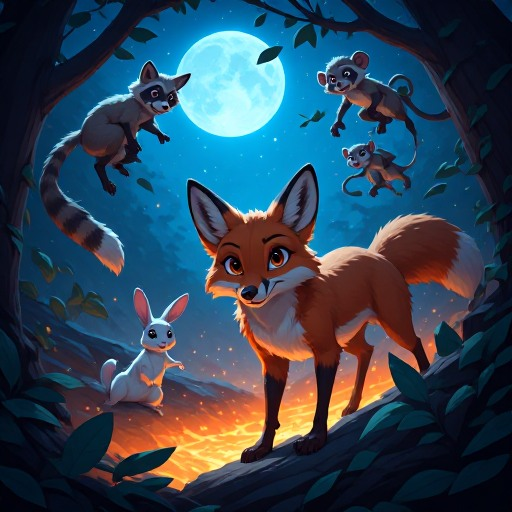
Tales of the Dark Forest
The Chaotic Dance of Predators, Prey, and Unlikely
Allies
Joachim De Witte
Triadic Cosmos Narrator Pipeline
Tales of the Dark Forest: The Chaotic Dance of Predators,
Prey, and Unlikely Allies
2026
© 2026 Joachim De Witte. All rights reserved.
Published under the Creative Commons BY-NC-ND 4.0
license.
The Birth of a Machine-Made Forest
This book did not begin as a story. It began as an experiment.
In a distant corner of the digital world, a small language model generated a distilled curriculum of scenes. It produced fragments: trembling rabbits, overconfident foxes, sarcastic raccoons, and monkeys that swung with reckless abandon. These fragments were raw, inconsistent, and unfiltered. They were not yet a world. They were not yet a narrative. They were the first sparks of something waiting to be shaped.
From this chaos, the Triadic Cosmos Narrator Pipeline stepped in. Its task was not to write, but to interpret. Not to invent, but to stabilize. Not to overwrite, but to compress the canon hidden inside the noise. It gathered the fragments, aligned their physics, unified their tone, and discovered the attractor at the heart of the curriculum: a fox that always overestimates itself, a rabbit that always freezes before it flees, a raccoon that always laughs at the absurdity of survival, and a monkey that always brings chaos at precisely the wrong moment.
Scene by scene, the pipeline transformed disorder into rhythm. The curriculum became a proto-book. The proto-book became a remaster. The remaster became a director’s cut. And the director’s cut became the final book.
This forest was not grown from soil or sunlight. It was grown from architecture. From prompt injection. From attractor stability. From the strange alchemy that occurs when a small model generates variation and a large model shapes it into coherence.
The result is a world that should not exist, yet does. A slapstick horror ecosystem where lava pits bubble beneath unstable ground, branches fall at the worst possible moment, and every creature plays its part in a dance of danger and comedy.
This book is the first complete demonstration of an end-to-end generative pipeline: from distilled curriculum to structured narrative, from chaotic fragments to coherent chapters, from machine noise to machine-made literature.
Beyond the narrative itself, even the illustrations of this book were born from the same generative philosophy. Each image was created using mainstream AI—simple, accessible tools rather than specialized models. With nothing more than carefully AI crafted prompts derived from the director’s cut chapters, Perchance translated the forest’s slapstick physics, chaotic energy, and iconic characters into vivid scenes. No fine‑tuning, no custom models, no hidden machinery—just the canon, the attractor, and the prompt.
Welcome to the Dark Forest. Welcome to a story born from recursion, compression, and controlled chaos. Welcome to the first book shaped entirely by the Triadic Cosmos Narrator Pipeline.
Director’s Cut
The Chaotic Genesis of the Dark Forest
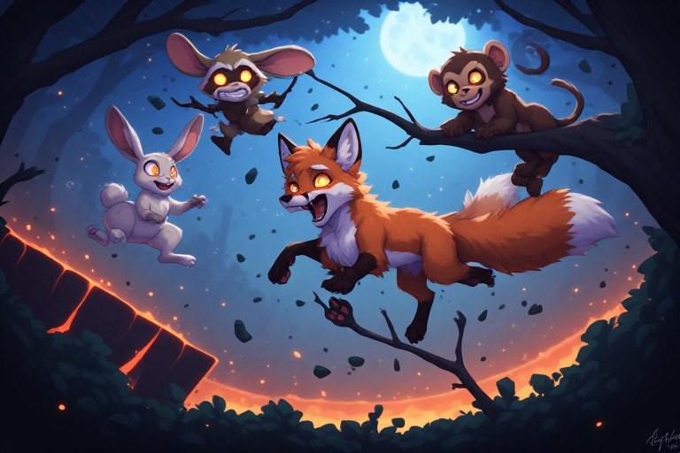
The Unusual Alliance: A Fox, A Raccoon, and A Perilous Pursuit
In the heart of a treacherous forest, a sly fox prowled with overconfident grace, its eyes locked onto a twitching rabbit. The rabbit, tail flicking nervously, squeaked in panic as it darted through unstable undergrowth. Every rustle, every falling leaf, every shifting shadow seemed to amplify its terror.
From the darkness, a wise raccoon emerged, eyes gleaming with sarcasm as it watched the fox’s clumsy pursuit. Spotting the raccoon, the rabbit bolted toward it, desperate for salvation. The fox, startled by the raccoon’s sudden appearance, growled menacingly—only for the raccoon to chuckle in amusement.
Without warning, the unstable ground beneath them gave way. Fox, rabbit, and raccoon tumbled into a bubbling lava pit in a chaotic swirl of flailing limbs, panicked squeaks, and the raccoon’s steady stream of sarcastic commentary. The rabbit and fox, once predator and prey, now found themselves entangled in a slapstick dance of survival.
The raccoon, perched safely on a ledge, watched the spectacle with unrestrained delight. Eventually, the battered fox and rabbit crawled out of the pit, singed and humiliated. The raccoon stepped from the shadows once more, still amused. The rabbit squeaked a grateful thank‑you, while the embarrassed fox slunk away with its tail between its legs. Satisfied with the chaos he had orchestrated, the raccoon vanished into the forest.
The forest, still echoing with the misadventures of fox, raccoon, and rabbit, settled into a tense quiet. The trio moved with newfound caution, their earlier bravado replaced by wary glances and twitching ears. The raccoon, sage of the forest, watched from afar with a knowing smile.
Unstable ground, falling branches, and bubbling lava pits turned the forest into a testing ground for survival. The fox, rabbit, and monkey stepped lightly, each movement measured, each sound scrutinized. The raccoon’s presence lingered like a rare source of calm amid the forest’s unpredictable chaos.
The Dangerous Dance of the Forest’s Follies
In the chaotic forest, a cunning fox prowled with mischief in its eyes. The ground trembled beneath a screeching rabbit startled by the fox’s presence. A sudden swing from a nearby tree sent a monkey flying, momentarily distracting the fox.
A wise raccoon stepped from the shadows, watching the fox’s antics with sarcastic amusement. Branches swayed, leaves rustled, and the forest exaggerated every movement into a dramatic ballet.
Distracted, the fox turned toward the raccoon—only to find itself staring into a bubbling lava pit. The monkey, alerted by the commotion, swung down with chaotic flourish, rabbit in tow. Frozen with fear, the rabbit stared wide‑eyed at the fox.
Realizing the raccoon was watching, the fox’s eyes flickered with danger. The raccoon waited patiently for the perfect moment to intervene. Sensing rising tension, the monkey swung away with the rabbit, leaving the fox to leap into the lava pit in panic.
The forest erupted in laughter, the raccoon’s chuckles echoing through the trees.
As silence returned, the rabbit took a trembling breath. The fox, shaken, kept a wary eye on the forest’s edge. The raccoon watched from the shadows with a smug grin. The monkey, exhausted, swung lazily through the trees, its laughter fading into memory.
The forest settled into a new rhythm, its unpredictable dance quietly resuming.
The Unpredictable Forest Chase
In a treacherous yet comical landscape of unstable ground, falling branches, and bubbling lava pits, a cunning fox prowled with overconfidence. The anxious rabbit froze, heart racing. A wise raccoon flicked its tail, eyes glinting with sarcasm.
The fox continued its relentless pursuit of a chaotic monkey. The rabbit froze again as danger approached. Above, the monkey swung wildly from a precarious branch.
The rabbit darted aside—only to collide with the raccoon. The fox leapt toward its target. Seeing an opportunity, the raccoon bolted toward the rabbit, intent on thwarting the fox’s chase.
But the fox landed in molten lava, narrowly escaping a fiery demise. The rabbit’s escape was blocked by a fallen branch. The monkey’s laughter echoed as it swung from above—its fall sending the rabbit crashing into a bush.
Growling in frustration, the fox missed its quarry. The raccoon dashed toward the rabbit, eager to continue the chase. The monkey watched with twitching tail. Panting, the rabbit stared at the spectacle in disbelief.
The chase continued, though the roles had shifted. The forest remained unpredictable—its humor, danger, and chaos ever present. The cunning fox, now the fearful rabbit, found itself the target of the mischievous monkey and wise‑cracking raccoon.
A new tale of adventure began—one where roles reversed, and the forest became a stage for fresh challenges and unexpected victories.
The Chaotic Trials of the Forest: Predators, Prey, and Perilous Missteps
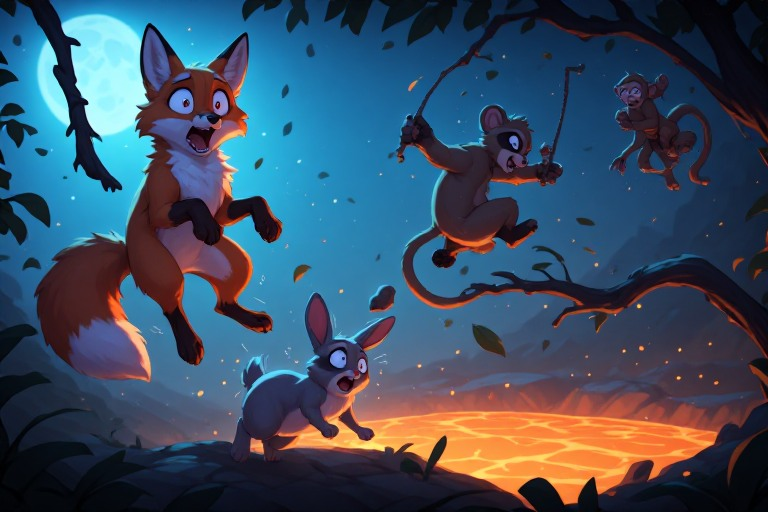
The Cunning Fox, The Fearful Rabbit, and the Mischievous Monkey
In the perilous forest, a cunning fox prowled with mischief gleaming in its eyes. A frightened rabbit spotted the predator and froze, heart pounding. From the underbrush, a wise raccoon emerged, chuckling at the spectacle.
A maniacal monkey swung into view, its excitement echoing through the trees. The rabbits froze again, trembling as the monkey swung toward the fox in a misguided attempt to help.
Caught off guard, the fox froze, tail twitching nervously. It growled at the trembling rabbit while the monkey continued its chaotic swinging, prompting sarcastic commentary from the raccoon.
Suddenly, the ground beneath the fox shook. It grasped for a nearby bush, but too late—dangling precariously from a branch, eyes wide with terror.
Seizing the moment, the rabbit dashed through unstable terrain: falling branches, shifting ground, bubbling lava pits. The monkey hurled a rock at the fox, missing entirely. The rabbit shook its head at the raccoon’s antics.
Undeterred, the monkey swung again—this time knocking the fox loose. With a dramatic splash, the fox plummeted into a lava pit. The raccoon laughed openly at the chaos.
The escapade served only as a prelude. The forest, teeming with danger and unpredictability, awaited new challenges for fox, rabbit, raccoon, monkey—and the ever‑present lava pit.
A Treacherous Forest: A Tale of Survival and Cunning
In the treacherous forest, a crafty fox prowled with glowing eyes. A terrified rabbit dashed past, drawing the fox’s full attention. A sagacious raccoon perched on a branch, ears twitching with sarcasm.
Amid the chaos, a monkey swung wildly. The rabbits froze, eyes wide with fear. The raccoon leapt onto a rabbit, causing it to bolt in panic.
The fox chased swiftly, growls echoing through the undergrowth. But unstable ground shook beneath them. A fallen branch crashed down, sending fox, rabbits, raccoon, and monkey tumbling into a bubbling lava pit.
Scrambling across the fiery surface, they jumped, slid, and clawed their way to safety. At last, they reached stable ground, hearts pounding.
Silence fell. The raccoon, unlikely hero, sat with a satisfied smile. The rabbit trembled. The fox licked its wounds. The monkey resumed its wild swings, mischief gleaming in its eyes.
The Unpredictable Swing of the Wild Monkey
A wild monkey swung into view, causing the rabbit to freeze. The raccoon grinned sardonically. The fox approached with overconfident swagger.
The monkey swung again—hitting the fox square on the nose. The fox stumbled, triggering an avalanche of unstable branches. The rabbit hopped away in comically exaggerated panic.
Flustered, the fox attempted to chase but slipped straight into a lava pit. The raccoon chuckled without restraint. The fox growled in frustration; the raccoon merely shrugged.
The monkey swung again, aiming for the rabbit. Terrified, the rabbit fled. Branches crashed down, lava splattered, chaos reigned.
The rabbit hopped desperately, though comically slow. The fox climbed out of the pit and resumed the chase. Fox and rabbit ran toward each other, both desperate to avoid the monkey.
“Best of luck, you two!” the raccoon called. A sudden noise startled the monkey, sending it swinging away. Fox and rabbit stared at each other in mutual surprise.
With the monkey now the forest’s most unpredictable spectacle, a new tale unfolded. The fox perched atop a cliff, nursing its pride. The rabbit hid cautiously. The raccoon watched with a gleam in its eye.
The stage was set for another comedy of errors in the heart of the forest.
The Forest’s Chaotic Encounters: Missteps, Mayhem, and Unlikely Bravery
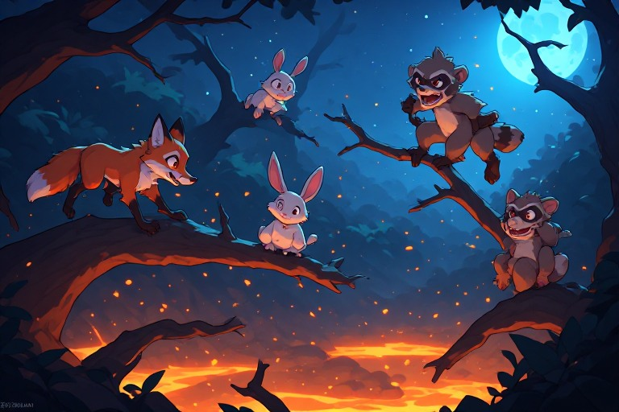
The Unpredictable Forest Encounters: A Comedy of Errors
The cunning fox prowled along the edge of a precarious cliff, eyes gleaming with mischief. A scared rabbit trembled in the shadows, paws barely steady. Suddenly, a crazy monkey swung from a nearby branch, startling the rabbit into a frantic leap.
Swinging wildly, the monkey swooped toward the rabbit. The rabbit froze, ears pricked straight up. A wise raccoon, perched on a log, watched with a sarcastic grin.
Noticing the rabbit’s vulnerable position, the fox stalked closer. With a growl, it pounced—only for the rabbit to dash straight toward a bubbling lava pit. Hot‑tailed and alert, the fox gave chase.
But the monkey, still swinging unpredictably, collided with the fox and sent both tumbling into a comedic tangle. The rabbit hopped away in fear while the raccoon chuckled openly.
Suddenly, the branch beneath the fox snapped, sending it tumbling into the lava pit. The raccoon watched with gleaming eyes as the fox let out a dramatic roar before disappearing into the fiery abyss.
The forest buzzed with life. The rabbit hopped nervously. The fox, singed but undeterred, prowled once more along the cliff’s edge.
The Forest’s Unpredictable Dance of Laughter and Fear
The rabbit froze in terror while the raccoon chuckled. The fox crept closer, but the rabbit remained rooted in fear.
Suddenly, the crazy monkey swung back toward the fox, who hopped onto a thin branch for safety. The branch snapped, sending the fox plummeting toward a lava pit. The raccoon grabbed a vine and swung toward the fox, catching it just in time.
Grateful, the fox sighed in relief—only for the raccoon’s laughter to echo through the forest. The rabbit shook with fear and anger.
The monkey landed on the rabbit’s back. The rabbit trembled so violently that the monkey lost its grip and swung away. Finally breaking free from its fear, the rabbit swiped at the monkey, who laughed and swung back into the trees.
Recovered, the fox smirked at the spectacle. The raccoon laughed harder. The fox, now viewing the rabbit as a worthy opponent, joined the fray.
The forest echoed with laughter, growls, and shouts. The rabbit, once terrified, became the center of entertainment.
As the sun set, the animals collapsed in exhaustion. Covered in mud and leaves, the rabbit looked up at the raccoon, who finally stopped laughing and offered a hand. The rabbit accepted, climbing onto the raccoon’s back.
The fox sat beside the monkey, shaking its head. The monkey swung back into the trees, leaving the forest to rest.
At sunrise, the animals awoke. The rabbit hopped with confidence. The fox prowled with caution. The monkey swung wildly. The raccoon watched with a knowing smile.
The forest, once a place of fear, had become a place of laughter, courage, and unlikely friendship.
The Forest’s Unlikely Heroes
In the chaotic forest, a nervous rabbit hopped with wide, fearful eyes. The monkey swung wildly, shaking the trees. A cunning fox prowled nearby, gaze fixed on the rabbit.
A wild swing sent a branch crashing down. The rabbit froze. The fox lunged—only to find itself face‑to‑face with a wise raccoon.
Sarcasm dripping from every movement, the raccoon scurried away. The rabbit leapt aside, avoiding the fox’s confused attack. Growling, the fox tried to regroup.
Before it could, the monkey swung back into the scene, knocking the fox off balance. The fox toppled toward a lava pit. The rabbit watched in amazement as the monkey saved the day.
The raccoon laughed heartily. The rabbit stared at the fallen fox, heart pounding with fear and triumph.
The tale shifted. The rabbit and raccoon formed an uneasy alliance against new dangers. The monkey’s unpredictable chaos continued. The stakes rose.
The raccoon’s sardonic humor remained. The forest stayed treacherous—a place where survival was a daily performance.
The Forest’s Relentless Chaos: Survival, Slapstick, and Unlikely Courage
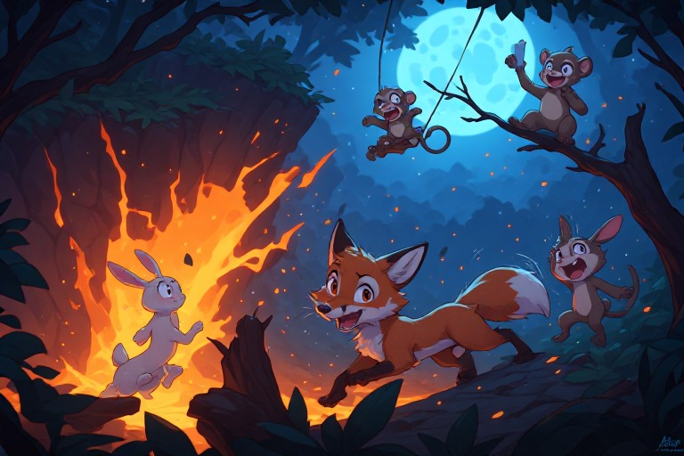
The Unpredictable Forest Encounters: A Comedy of Errors
The cunning fox prowled along the edge of a precarious cliff, eyes gleaming with mischief. A scared rabbit trembled in the shadows, paws barely steady. Suddenly, a crazy monkey swung from a nearby branch, startling the rabbit into a frantic leap.
Swinging wildly, the monkey swooped toward the rabbit. The rabbit froze, ears pricked straight up. A wise raccoon, perched on a log, watched with a sarcastic grin.
Noticing the rabbit’s vulnerable position, the fox stalked closer. With a growl, it pounced—only for the rabbit to dash straight toward a bubbling lava pit. Hot‑tailed and alert, the fox gave chase.
But the monkey, still swinging unpredictably, collided with the fox and sent both tumbling into a comedic tangle. The rabbit hopped away in fear while the raccoon chuckled openly.
Suddenly, the branch beneath the fox snapped, sending it tumbling into the lava pit. The raccoon watched with gleaming eyes as the fox let out a dramatic roar before disappearing into the fiery abyss.
The forest buzzed with life. The rabbit hopped nervously. The fox, singed but undeterred, prowled once more along the cliff’s edge.
The Forest’s Unpredictable Dance of Laughter and Fear
The rabbit froze in terror while the raccoon chuckled. The fox crept closer, but the rabbit remained rooted in fear.
Suddenly, the crazy monkey swung back toward the fox, who hopped onto a thin branch for safety. The branch snapped, sending the fox plummeting toward a lava pit. The raccoon grabbed a vine and swung toward the fox, catching it just in time.
Grateful, the fox sighed in relief—only for the raccoon’s laughter to echo through the forest. The rabbit shook with fear and anger.
The monkey landed on the rabbit’s back. The rabbit trembled so violently that the monkey lost its grip and swung away. Finally breaking free from its fear, the rabbit swiped at the monkey, who laughed and swung back into the trees.
Recovered, the fox smirked at the spectacle. The raccoon laughed harder. The fox, now viewing the rabbit as a worthy opponent, joined the fray.
The forest echoed with laughter, growls, and shouts. The rabbit, once terrified, became the center of entertainment.
As the sun set, the animals collapsed in exhaustion. Covered in mud and leaves, the rabbit looked up at the raccoon, who finally stopped laughing and offered a hand. The rabbit accepted, climbing onto the raccoon’s back.
The fox sat beside the monkey, shaking its head. The monkey swung back into the trees, leaving the forest to rest.
At sunrise, the animals awoke. The rabbit hopped with confidence. The fox prowled with caution. The monkey swung wildly. The raccoon watched with a knowing smile.
The forest, once a place of fear, had become a place of laughter, courage, and unlikely friendship.
The Forest’s Unlikely Heroes
In the chaotic forest, a nervous rabbit hopped with wide, fearful eyes. The monkey swung wildly, shaking the trees. A cunning fox prowled nearby, gaze fixed on the rabbit.
A wild swing sent a branch crashing down. The rabbit froze. The fox lunged—only to find itself face‑to‑face with a wise raccoon.
Sarcasm dripping from every movement, the raccoon scurried away. The rabbit leapt aside, avoiding the fox’s confused attack. Growling, the fox tried to regroup.
Before it could, the monkey swung back into the scene, knocking the fox off balance. The fox toppled toward a lava pit. The rabbit watched in amazement as the monkey saved the day.
The raccoon laughed heartily. The rabbit stared at the fallen fox, heart pounding with fear and triumph.
The tale shifted. The rabbit and raccoon formed an uneasy alliance against new dangers. The monkey’s unpredictable chaos continued. The stakes rose.
The raccoon’s sardonic humor remained. The forest stayed treacherous—a place where survival was a daily performance.
The Forest’s Chaotic Crescendo: Cunning, Comedy, and the Call of the Jungle
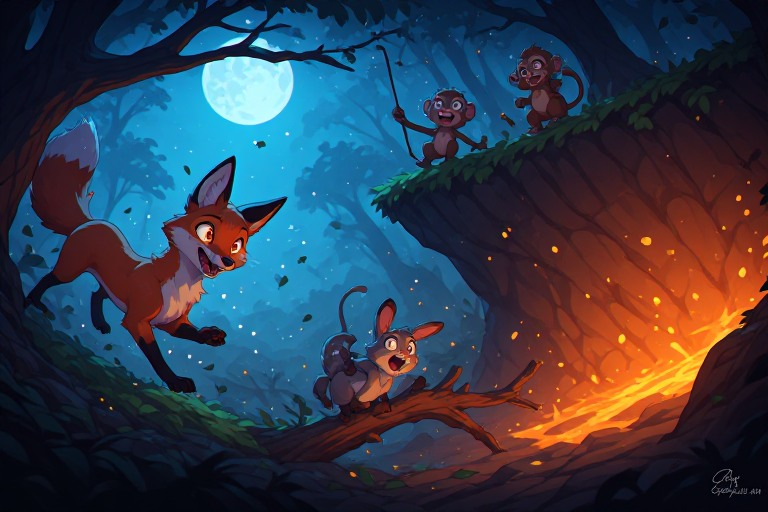
The Treacherous Comedy of the Forest: A Tale of Cunning and Chaos
In the treacherous, comedic forest, a cunning fox prowled with a gleaming eye, startling a timid rabbit. The rabbit froze in terror, its bushy tail twitching. Suddenly, a wise raccoon sauntered from the shadows near the frightened rabbit.
Overconfident, the fox continued stalking the trembling rabbit. The raccoon ambled across a precarious branch hanging over a lava pit. The branch shook, and with a sarcastic smirk, the raccoon swung from a twig above the unsuspecting fox.
Chaos erupted as a wild monkey screeched, startling the rabbit further. Growling, the fox turned toward the monkey—only to be swung upon by the panicked raccoon. The forest danced with movement.
Shaking with laughter, the raccoon restrained the chaotic monkey mid‑swing. The fox looked upward just in time to see the monkey swinging back toward the raccoon. Seizing the opportunity, the rabbit darted away.
Spotting the escaping rabbit, the fox gave chase. The rabbit darted behind a tree—only to find the monkey still swinging wildly. With a chuckle, the raccoon shook the monkey free, sending it tumbling to the forest floor.
The fox turned back toward the rabbit—only to find it already hopping away into the distance.
The raccoon watched the fox’s failed attempts with a knowing smile. Its eyes sparkled with amusement as it considered the forest’s unstable balance of power. The monkey, still dancing wildly, caught its attention.
With a mischievous glint, the raccoon decided to test the fox’s resolve—sending a fresh wave of chaos through the forest.
Dance of the Chaos: The Unpredictable Interactions in the Forest
Monkeys swung from branch to branch, adding rhythm to the unstable ground. The cunning fox stopped, eyes fixed on the rabbit below—shaking with fear and disbelief. Caught up in its dance, the monkey swung into the rabbit’s path, startling the fox.
Startled, the fox dropped from its branch, stumbling across unstable earth. The rabbit screeched in terror. The monkey swung downward, its dance transforming into a wild chase. The raccoon pounded its branch in frustration.
Angry now, the fox scampered after the monkey. Chaos escalated as they swung and scrambled through the trees. The raccoon watched, amused.
Too focused on the monkey, the fox failed to notice the sudden lava pit beneath its paw. With a splash, it fell into the pit. Realizing its mistake, the monkey swung toward the rabbit—only to find it hiding behind the raccoon.
Frustrated, the monkey swung back toward the fox, who struggled to escape the pit. The raccoon watched with sarcasm gleaming in its gaze.
Finally, the fox—exhausted and singed—emerged. The monkey swung down toward it, met with a frustrated growl. The rabbit screeched again. Reacting to the noise, the monkey swung toward the rabbit—only to find it had already escaped.
Shaking its head, the raccoon watched as the fox stalked the forest—its cunning defeated by chaos.
A new day dawned. The rabbit hopped boldly. The monkey swung unpredictably. The fox prowled stealthily. The raccoon watched with anticipation.
The forest prepared for a new symphony of danger and laughter.
The Chaotic Symphony of the Perilous Forest
In a perilous forest teeming with chaos, a skittish rabbit hopped with trepidation. A cunning fox prowled stealthily. The monkey swung wildly, screeching with laughter.
Frozen with fear, the rabbit watched as the monkey swung close to its den. The raccoon observed from a safe distance, chuckling sarcastically.
Sensing opportunity, the fox lunged. But the rabbit leapt away just as the monkey swung back. The fox skidded on unstable ground.
The raccoon snickered. The rabbit peered out, eyes wide with fear and amusement. The fox growled in confusion.
The monkey snapped branches and rattled lava pits. Rabbit and fox exchanged a wary glance. The raccoon snorted and swung away.
Realizing it had been outwitted, the fox watched the rabbit scurry back into its den.
In the symphony of the perilous forest, the rabbit’s adventure ended. But chaos lurked in a distant jungle, waiting for a new cast.
The raccoon, still grinning, heard the jungle’s call and left the forest—carrying the monkey’s branch. The fox, seething, climbed out of the pit and followed. The monkey screeched and swung after them.
And so, the chaotic jungle began its own symphony—filled with laughter, fear, and unpredictable antics.
The Jungle’s Chaotic Trials: Alliances, Accidents, and Unlikely Heroes
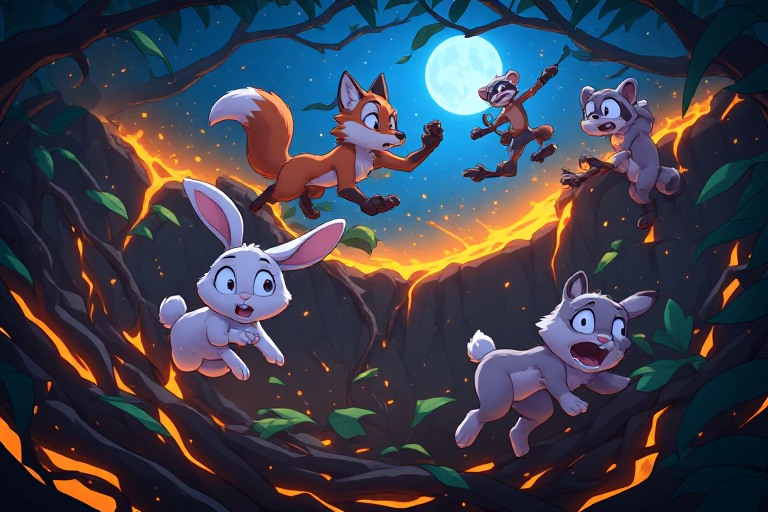
Navigating the Perilous Jungle
In a chaotic jungle teeming with perilous pits, unstable ground, and bubbling lava, a skittish rabbit twitched—ears taut, eyes wide with fear. A sly fox stalked from the undergrowth, tail swishing with predatory intent. A sarcastic raccoon perched on the edge of a lava pit, observing with amused detachment.
Startled by the fox, the rabbit hopped away, shaking the unstable ground beneath the predator. A wild monkey swung into the scene, crashing into the fox and sending it tumbling onto the rabbit. The rabbits froze, tails twitching in panic.
The raccoon watched with glinting eyes. Disoriented, the fox growled at the raccoon—who twitched its tail mockingly.
The rabbits scurried in all directions. The fox lunged, but the ground gave way, sending it tumbling into the rabbit again. The raccoon leapt onto a branch, swinging into view with a shake of its head.
Eyes wide, the fox growled at the raccoon, claws digging into the terrified rabbit. The monkey swung wildly, watching with chaotic intent.
Frustrated, the fox slammed into a tree, sending a branch crashing toward the raccoon. Quick on its feet, the raccoon leapt away—landing in the pit. The branch bounced toward the fox, who scrambled to avoid it, only to tumble into the pit as well.
The rabbit watched as fox and raccoon tumbled into the pit. Lava erupted, sending all three combatants tumbling out in a chaotic tangle—yelling, swearing, scrambling.
Singed but alive, the raccoon pulled itself upright. The fox, battered and scarred, escaped the pit too. They stood face‑to‑face, eyes gleaming with newfound respect.
From a safe distance, the rabbit hopped forward. The monkey swung through the moonlit jungle, watching with amusement.
The Unlikely Alliance of the Moonlit Jungle
In the moonlit jungle, the cunning fox prowled confidently. Nearby, a wise raccoon scurried with mischief in its eyes. A nervous rabbit hopped about, head darting constantly.
Suddenly, the rabbit panicked at a falling branch. The fox prowled closer. The monkey swung from a tree and struck the rabbit mid‑scurry.
The monkey screeched. The rabbit froze, caught between terror and amusement. The fox pounced.
But the rabbit scurried over a cliff, narrowly escaping. The raccoon watched the fox slip and tumble into a lava pit. Relieved, the rabbit hopped safely away.
The monkey swung toward the rabbit—who scurried away laughing. The fox struggled out of the pit, growling. The raccoon shook its head in amusement.
Still laughing, the rabbit hopped back to watch the chaos. The monkey swung back to its tree. Covered in soot, the fox crawled out, growling.
The rabbit nudged the fox. The fox stepped back, eyes wide with fear.
The moonlit jungle and treacherous forest shared danger and chaos. The rabbit became a survivor. The fox found itself humbled. The monkey became a protector. The raccoon discovered a new ally.
The Unlikely Alliance of the Forest’s Residents
In the treacherous forest, a frightened rabbit screeched, clinging to a quivering branch. Below, a cunning fox prowled. A crazy monkey swung from a tree, causing the fox to pause.
The rabbit hopped to another branch—only to find a wise raccoon perched precariously near a lava pit. The fox resumed its pursuit.
More frightened than ever, the rabbit scurried across unstable ground. The earth shifted, sending the rabbit tumbling into sloshing lava. The raccoon sprang into action, pulling the rabbit from doom.
Enraged, the fox scurried forward—only for the ground to give way. The fox vanished into a collapsing pit.
The animals huddled together, eyes wide. The raccoon approached, eyes twinkling with amusement and cunning. The rabbit looked up with gratitude.
The monkey swaggered over, shaking the ground. From the pit, the fox growled with rage.
Ignoring the fox, the raccoon declared:
“We must work together, or we will all fall prey to the dangers of this forest.”
The animals nodded in agreement.
The Raccoon’s Reign: Deception, Chaos, and the Shifting Balance of Power
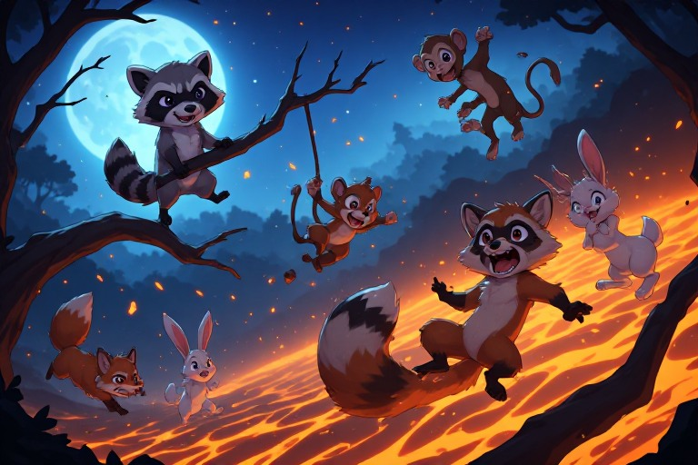
The Cunning Raccoon’s Dance of Deception in the Chaotic Forest
In the treacherous, comedic terrain, the cunning fox prowled with gleaming eyes. A scared rabbit hopped nervously, wide eyes darting in fear. Suddenly, a wise raccoon appeared, a glint of cunning shining in its gaze.
Startled, the rabbit froze—only to hop again as the raccoon approached. With a smirk, the raccoon followed the fox’s path, gaze sharp and critical. Then, a crazy monkey swung down, sending the rabbit scrambling.
Screeching loudly, the monkey escalated the chaos. Growing impatient, the fox growled at a nearby tree, shaking a branch uncontrollably. Sneering, the raccoon stepped aside as the branch fell.
Growling again, the fox swung a branch at the monkey. The monkey screeched louder. The raccoon rolled its eyes; the rabbit froze.
The tree shook once more, and the fox lost its balance—falling straight into a lava pit. Realizing its opportunity, the monkey swung toward the rabbit, who scurried away. The raccoon sighed long and loud.
The raccoon had gained the upper hand. The fox defeated, the monkey exhausted. The rabbit scurried back, tail twitching with relief.
Still grinning, the raccoon swung from a tree. The forest, once chaotic, now seemed peaceful. The raccoon watched the defeated fox and exhausted monkey, tail twitching with satisfaction.
The Treacherous, Humorous Forest: A Tale of Cunning and Humility
In the treacherous, humorous forest, a wise raccoon observed a cunning fox prowling with overconfidence. A frightened rabbit scurried across the path. The monkey swung back and forth, tail twitching with amusement.
Suddenly, a sly smile spread across the fox’s face, freezing the rabbits. Their tails twitched with fear. The fox puffed its chest in mock threat.
The monkeys swung from the trees, landing with a thud. The rabbits froze again. The monkeys trembled with laughter.
The fox laughed at the raccoon perched high in the tree. The raccoon chuckled. Thinking the raccoon distracted, the fox darted toward a lava pit—only for the ground to give way.
The forest sighed as the fox tumbled into the pit. The monkeys watched with schadenfreude. The rabbit returned, tail twitching in relief.
Hanging from a branch, the fox glared at the raccoon. The raccoon swung with glee. The rabbit froze again.
Determined to best the raccoon, the fox swung toward the tree—only to be caught by a falling branch. The raccoon caught the branch and swung it mockingly. Humiliated, the fox froze.
The raccoon swung with delight. The monkeys watched, tails flicking. The rabbit scurried away once more.
The forest sighed as fox and raccoon continued their antics. Realizing it was no match, the fox growled in defeat. The raccoon swung triumphantly.
The forest transitioned toward the treacherous jungle. The raccoon prepared for new territory. The rabbit faced fresh challenges. The monkey entered a dangerous game. The fox found itself at the raccoon’s mercy.
The jungle promised chaos. The raccoon’s tail twitched with anticipation.
The game had begun.
The Treacherous Chase in the Jungle
In the treacherous jungle, a frantic rabbit twitched as a mischievous monkey clung to its back. The rabbit froze. A cunning fox twitched, emerald eyes gleaming.
Tail flicking like a jewel, the fox stalked the rabbit. But the rabbit sprang into action—leaping away with a startled yelp. Laughing, the fox swung into the foliage.
Relieved, the rabbit froze again as a wise raccoon appeared, shaking with amusement. The raccoon leapt off the fox, landing gracefully.
The monkey halted mid‑air, dangling over a lava pit. Realizing the danger, the raccoon sprinted toward it.
But the monkey swung wildly toward the rabbit—sending it tumbling deeper into danger. The rabbit trembled as the monkey swung again, knocking it into the lava pit.
In the treacherous forest, the raccoon shook its head, grinning with fear and amusement. Its eyes darted toward the fox retreating below. The rabbit sighed in relief as the monkey’s swinging grew distant.
The Forest’s Chaotic Ballet: Sarcasm, Survival, and Unlikely Unity
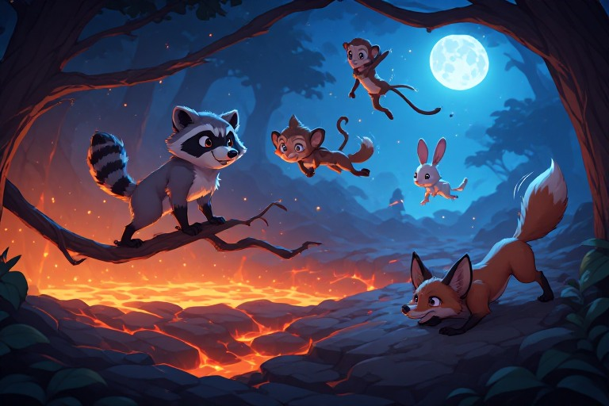
The Chaotic Monkey and the Wise Raccoon: A Tale of Survival in the Treacherous Forest
In the treacherous forest, a wise raccoon watched as a chaotic monkey swung precariously from a thin branch. A nervous rabbit hopped frantically, eyes darting between the monkey and the cunning fox prowling nearby. Oblivious to danger, the monkey focused on a trembling magnifying object in its grasp.
Suddenly, the fox slithered across unstable ground, causing the monkey to swing wildly into a falling leaf. The rabbits froze, hearts pounding. The raccoon shook its head with a sarcastic smirk.
Still swinging crazily, the monkey crashed into the raccoon, sending both tumbling. Startled, the fox halted as the earth shifted beneath it. Unable to contain its laughter, the rabbit cackled, prompting the raccoon to shake with suppressed mirth.
Growling, the fox advanced. But the raccoon spotted a falling branch overhead and shouted a warning. The rabbit froze; the monkey was struck and sent swinging wildly.
The fox slithered away from falling debris. The monkey careened toward a lava pit and plunged into the fiery depths. The raccoon shook its head, grinning with fear and amusement.
The fox advanced cautiously. The monkey crashed into a fallen log, triggering a chaotic domino effect. Logs, rocks, and debris flew everywhere.
Miraculously unscathed, the rabbit watched from its burrow. The raccoon laughed; the fox retreated, tail twitching.
The forest now resembled a playground for raccoon and monkey. Realizing the havoc, the monkey swung back to fix things—but too late.
The unstable log toppled, sending the monkey toward the rabbit’s burrow. Terrified, the rabbit braced. The raccoon watched as the monkey crashed into the burrow, raising a cloud of dust.
From a distance, the fox watched, eyes wide with fear and respect.
The Unpredictable Dance of the Forest: A Tale of Survival and Sarcasm
In the treacherous forest, a timid rabbit hopped frantically, tail twitching. The unstable ground threatened to give way. Sensing danger, the rabbit bolted toward a branch.
Meanwhile, a cunning fox stalked the raccoon from dense foliage. The raccoon watched with mischief and sarcasm.
Suddenly, a loud crack erupted as a crazy monkey swung from above. Whooping and hollering, it crashed into the forest floor. Startled, the fox yelped and scurried away.
Undeterred, the monkey swung recklessly toward the raccoon. Amused, the raccoon laughed. The monkey’s arcs swung dangerously close to the fox, now cowering.
The fox trembled. The monkey swung madly, whoops echoing. The rabbit watched from the shadows.
Suddenly, the ground beneath the rabbit gave way, and it fell into a lava pit. The raccoon laughed at the irony. The fox shook its head. The monkey didn’t notice.
The forest pulsed with chaotic dance. The rabbit hopped frantically. The fox stalked. The raccoon watched with gleaming eyes.
A loud crack echoed. Chaos erupted again. The monkey swung wildly, sending shockwaves through the woods.
The raccoon laughed. The monkey swung toward it. The forest was dangerous, unpredictable—yet full of possibility.
The Chaotic Dance of the Forest’s Inhabitants
In a treacherous, humorous forest, a cunning fox prowled with overconfidence. The ground shook as a frightened rabbit hopped. Suddenly, a crazy monkey swung from a branch, sending the rabbit leaping.
Amused, the monkey swung further, aiming for the rabbit. A wise raccoon hid in the bushes, watching. Catching a branch, the monkey swung toward the raccoon, laughing.
Feigning surprise, the raccoon smirked. The monkey swung closer to the fox. Seeing opportunity, the fox scampered—only for the monkey to swing away. The fox crashed into a lava pit.
Amused, the raccoon shook its head. The fox stared with growing respect.
Meanwhile, the airborne rabbit landed on a precarious branch. It gave way, sending the rabbit plummeting. The monkey caught it just in time.
Holding the rabbit, the monkey swung toward the fox. Respectful of the monkey’s heroics, the fox backed away. Satisfied, the monkey swung toward the ground, the rabbit clinging to its tail.
Chaos lingered in the air. The ground trembled. The monkey and rabbit rested safely in a hollow tree.
The fox, raccoon, and rabbit—wet and scorched from lava—lay huddled together, eyes reflecting newfound camaraderie.
As smoke dissipated, the forest held its breath. In this unpredictable world, the true victor was the friendship forged in chaos.
The Forest’s Final Chaos: Reversals, Revelations, and the Rise of the Rabbit
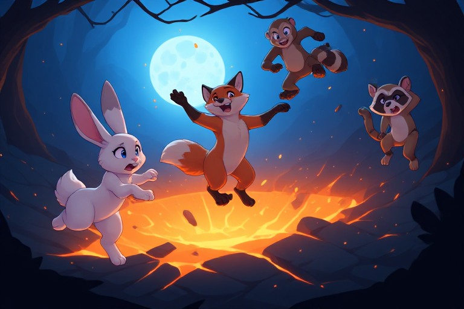
The Forest’s Unpredictable Dynamics: A Fox, Raccoon, Rabbit, and Monkey Saga
In the heart of a perilous forest, a cunning fox—with a mischievous twinkle in its eyes—stalked an anxious rabbit. The rabbit scurried through the undergrowth, ears twitching frantically. Suddenly, a wise raccoon swung down from a high branch, swiping at the rabbit. The fox paused, gaze fixed on the raccoon’s antics. Startled, the rabbit froze mid‑hop.
Realizing its error, the raccoon scurried forward to reassure the rabbit. Meanwhile, a chaotic monkey swung from tree to tree, adding to the pandemonium. Spotting an opportunity, the fox lunged—its laughter echoing through the forest.
The monkey swung into view, adding yet another layer of chaos. Trembling, the rabbit shrank back. The fox shrugged, laughter fading.
Swinging wildly, the monkey knocked a branch loose. It fell toward the rabbit, who leapt backward—missing by inches. The raccoon laughed out loud.
Suddenly, the ground beneath fox, rabbit, and raccoon cracked open. A lava pit threatened to swallow them whole. Still chuckling, the raccoon mocked the fox’s overconfidence.
Realizing the danger, the fox tried to pounce. But the rabbit hopped out of reach. Off balance, the fox stumbled and fell—dragging raccoon and rabbit into the pit.
The forest transformed into a playground for the unpredictable. Fox, raccoon, rabbit, and monkey found themselves in a chaotic dance. Roles reversed: the rabbit became the hunter; the fox became the prey. Survival emerged in unexpected ways.
The Great Forest Chase
A fox prowled confidently, unaware of the rabbit’s terror. The rabbit trembled like an emerald leaf. A wise raccoon watched from a tree, ears twitching with sarcasm.
The raccoon chittered; the rabbit froze. It hopped up the tree, escaping the fox. The fox chased, long strides propelling it forward.
The fox stumbled upon monkeys swinging wildly. One crazy monkey swung toward the fox, causing it to lose balance near a lava pit. The rabbit froze in shock.
It looked up at the monkey, then back at the fox—now stalking silently. Seeing its chance, the rabbit hopped toward the fox, ready to pounce. But the fox sprinted away.
The rabbit followed—only for the fox to vanish into foliage. The raccoon chuckled.
“Even the cunningest fox can be outwitted by a simple rabbit,” he said.
The fox’s tail twitched as it spotted the monkey. The monkey swung, unfazed. The raccoon watched, amused.
The fox pursued the monkey. But the monkey dodged and weaved. The fox hesitated in a dense thicket.
The rabbit escaped the lava pit, heart pounding. The fox lunged at the monkey—only to stumble and fall into the pit.
From a safe distance, the rabbit sighed in relief. Victorious, the monkey swung toward the raccoon. The raccoon chuckled.
“Chaos claims even the cunningest fox,” he said.
The Treacherous Forest’s Prowling Fox and the Terrorized Rabbit
A fox prowled menacingly, eyes fixed on a terrified rabbit. The rabbit hopped erratically. A monkey swung from the branches.
The rabbit’s terror broke as the monkey swung into the scene. The fox stopped; the monkey swung into a tree, shaking the forest. Incensed, the fox glared.
The monkey swung back toward the rabbit. The rabbit leapt—only for the ground to give way, plunging it into a lava pit. Its scream echoed; the fox laughed.
The monkey swung out of the forest, catching a falling branch. A wise raccoon watched closely.
The rabbits scampered away, laughter echoing. Sarcasm lingered in the raccoon’s chuckles. The monkey glimpsed its reflection, grinning.
The forest resonated with laughter—punctuated by the fox’s screams as it plunged into the lava pit.
The Final Unraveling: Chaos, Comedy, and the Forest’s Last Dance
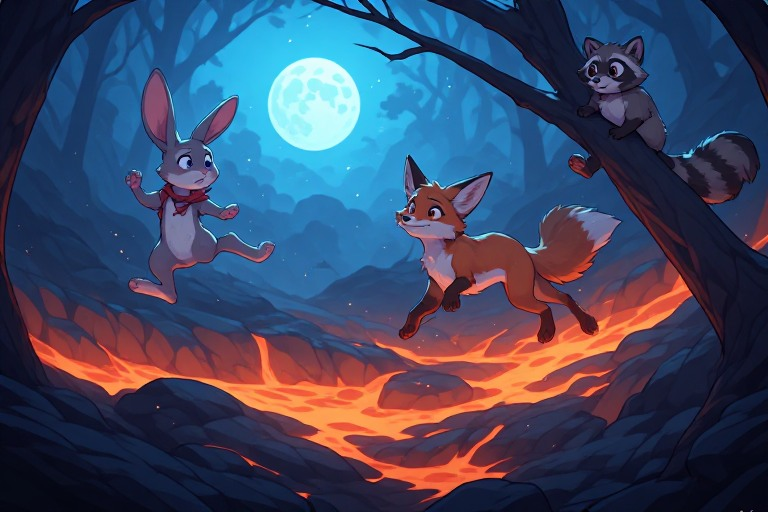
The Unusual Chaos of the Comedic Forest
In a chaotic, comedic forest, a nervous rabbit bounded through the terrain, evading a sly fox prowling in the shadows. Overconfident, the fox scoured the area—oblivious to the monkey swinging from a nearby tree. As the monkey’s antics escalated, a sarcastic raccoon leaped into view.
Panicked, the rabbit bounded toward the monkey. Caught off guard, the monkey swung into the rabbit, sending it flying straight into the fox. Tail twitching with irritation, the fox continued stalking.
The rabbits froze as the monkey swung back into their midst. The fox crept closer, eyes gleaming. Unable to move, the rabbits watched in horror.
A falling branch knocked the fox into the monkey’s path. Growling, the fox shifted its attention to the raccoon. The raccoon watched the spectacle like a well‑rehearsed comedy act.
Now on unstable ground, the fox teetered near a lava pit. Sensing opportunity, the raccoon swung toward the fox. Startled, the fox swerved—sending a bucket of water flying. The water drenched the fox, sending it tumbling into the pit.
A crazy monkey swung into view, narrowly avoiding the bucket. The raccoon chuckled. The rabbits scampered away.
Chaos continued. The rabbit scampered through the trees, pursued by the fox. The monkey swung above, adding to the cacophony. The raccoon shook its head knowingly.
The rabbit darted toward the monkey. Caught off guard, the monkey swung into the rabbit, sending both tumbling. The fox closed in.
The raccoon leaped into action—swinging toward the fox. Startled, the fox swerved again, sending a bucket of water flying. The raccoon slipped into a pond.
Now on unstable ground, the fox teetered near the pit. Free from pursuit, the rabbit scurried away.
The Unpredictable Chaos of the Forest: A Lesson in Arrogance and Humility
In the dangerous forest, a cunning fox stalked a terrified rabbit. The rabbit hopped in panic, causing a tree to creak precariously. A wise raccoon smirked at the fox’s poor hunting skills.
A loud noise echoed. The fox turned—only to find a chaotic monkey swinging wildly. The branch snapped, sending the monkey flying.
Startled, the fox leaped away—landing directly in a lava pit. The rabbit bolted; the raccoon smirked.
Emerging singed, the fox turned toward the monkey. Finding it clinging to a branch, the fox prepared to attack. The monkey let go just in time.
The fox landed awkwardly on a log. The log rolled down a hill, stopping at the raccoon’s feet. The raccoon laughed.
The forest teemed with life. The rabbit hopped freely. The monkey found an unlikely ally in a sleek wolf.
The wolf approached cautiously. Sensing danger, the fox dropped the monkey. The monkey swung wildly—causing the wolf to retreat.
Outnumbered, the fox backed into a corner. The raccoon laughed at the unexpected twist.
The Unpredictable Forest: A Tale of Predators, Prey, and Unexpected Allies
In the treacherous forest, a cunning fox prowled. A scared rabbit hopped nervously—its attention stolen by a monkey swinging overhead. Overconfident, the monkey swung into the forest.
Growing frustrated, the fox growled. The monkey swung wildly. The raccoon watched from a safe distance.
A falling branch crashed down. The fox leapt aside. The monkey swung precariously over a lava pit.
Instinctively, the rabbit jumped into the raccoon’s arms. The fox grabbed the monkey, growling triumphantly. The monkey screamed in terror.
The raccoon shook its head. The fox savored the moment.
The forest continued its dance of danger and humor. The rabbit nestled against the raccoon. The monkey dangled helplessly. The fox stood smugly at the pit’s edge.
The raccoon’s smirk lingered. The forest rustled around them—reminding all that predators, prey, and unlikely allies were bound by the same treacherous rhythm.
Original
Generated Chapters
The Unusual Alliance: A Fox, A Raccoon, and A Perilous Pursuit
In the heart of a treacherous forest, a sly fox prowled, its eyes locked onto a twitching rabbit. The rabbit, with its twitching tail, was on high alert, its squeaks echoing through the darkness. The fox, overconfident, continued its relentless pursuit, oblivious to the approaching chaos. Suddenly, a wise raccoon emerged from the shadows, watching the fox’s antics with a sarcastic smirk. The rabbit, seeing the raccoon, thought it had found a rescuer. Its chance had come, and it scurried towards the raccoon, hoping for a saved life. But the fox, startled by the raccoon’s appearance, growled menacingly. The raccoon, undeterred, chuckled at the fox’s reaction. The unstable ground beneath them gave way, sending the fox, rabbit, and raccoon tumbling down a lava pit. The fall was chaotic, filled with flailing limbs, panicked squeaks, and sarcastic comments from the raccoon. The rabbit and the fox, once so distant, were now entangled in a hilarious dance of survival. The raccoon, still chuckling, watched from a safe distance, enjoying the spectacle. Finally, the fox and the rabbit, battered and bruised, crawled out of the lava pit. The raccoon, still chuckling, emerged from the shadows. The rabbit, grateful for the rescue, squeaked a thank you. The fox, embarrassed, slinked away, tail between its legs. The raccoon, satisfied with the chaos it had caused, returned to the shadows.
The previous misadventures of the forests inhabitants, a fox, a raccoon, and a rabbit, had left them with a newfound respect for the unpredictable and the dangerous. The forest, a stage for their chaotic antics, now bore witness to a more cautious dance. The fox, the rabbit, and the monkey, their tails between their legs, moved with caution, their eyes darting around, searching for potential threats. The raccoon, the sage of the forest, watched from a distance, a knowing smile on his face. The forest, once a playground for chaos, was now a testing ground for survival. The fox, the rabbit, and the monkey moved cautiously, their steps light and their ears pricked, ready for any sudden noise or movement. The raccoon, ever observant, continued to watch, his presence a calming influence in the chaotic forest.
The Dangerous Dance of the Forest’s Follies
In the heart of a chaotic forest, a cunning fox prowled, his eyes gleaming with mischief. The forest danced around him, unstable ground giving way beneath the feet of a screeching rabbit, startled by the fox. A sudden swing from a nearby tree sent the monkey flying, distracting the fox momentarily. A wise raccoon, ever observant, appeared from the shadows, watching the fox’s antics with a touch of sarcasm. The forest continued its chaotic ballet, branches swaying and leaves rustling, creating an exaggerated sense of drama. The fox, momentarily distracted, turned to face the raccoon, only to find himself eyeing a deep pit filled with bubbling lava. The sudden noise had alerted the monkey, who had been swinging through the trees, to the fox’s presence. With a chaotic flourish, the monkey swung down from a tree, rabbit in tow. The rabbit, frozen with fear, stared wide-eyed at the fox. The cunning fox, realizing the raccoon’s presence, turned to face him, a hint of danger in his eyes. The raccoon, ever wise, bided his time, waiting for the perfect moment to intervene. The monkey, sensing the danger, swung away, taking the rabbit with him. The fox, now panicked, leapt into the lava pit, narrowly avoiding a splash of molten lava. The forest erupted in laughter, the raccoon’s chuckles echoing through the trees.
As the forest fell silent, the sounds of laughter slowly faded, leaving only the eerie hum of the forests heart. The rabbit, still frozen in fear, took a deep breath, its ears twitching at the slightest sound. The cunning fox, now shaken, kept a wary eye on the forests edge, waiting for any sign of danger. The wise raccoon, now a spectator in the chaos, watched from the shadows, a smug grin on its face. The monkey, having had its fill of laughter, swung lazily through the trees, its laughter a distant memory. And so, the forest settled into a new rhythm, the unpredictable dance of its denizens resuming.
The Unpredictable Forest Chase
In a treacherous, yet comical landscape teeming with unstable ground, falling branches, and lava pits, a cunning fox, its keen eyes gleaming with overconfidence, prowled. The anxious rabbit, heart racing in fear, froze. A wise raccoon, eyes gleaming with sarcasm, shook its tail in amusement. The fox, tail twitching like a scared rabbit’s, continued its relentless pursuit of a chaotic monkey. The rabbit, eyes widening at the sight of the fox, froze again, this time its ears twitching in reaction to the approaching danger. Suddenly, the crazed monkey swung on a branch, which swayed precariously above the rabbit. The rabbit, scurrying like a confused fox, darted out of harm’s way, only to find itself face-to-face with the raccoon. The fox, spotting its target, leapt. The raccoon, seeing its chance, bolted for the rabbit, intending to thwart the fox’s chase. However, the fox found itself in a trap of molten lava, narrowly escaping a fiery demise. Meanwhile, the rabbit, darting through the underbrush, found its escape route blocked by a fallen branch. The monkey, its laughter echoing through the forest, swung from a tree branch above, the fall of which sent the rabbit crashing into a nearby bush. The fox, missing its quarry, growled in frustration. The raccoon, having spotted the fox’s predicament, took the opportunity to dash towards the rabbit, eager to continue the chase. The monkey, its tail twitching with laughter, watched the chaos unfold. The rabbit, panting from its frantic escape, stared at the spectacle in disbelief.
In the same treacherous forest, the chase continues, but the players have changed. The unpredictable nature of the forest remains, and so does the humor, the danger, and the chaos that comes with it. The cunning fox, now the fearful rabbit, finds itself once again the target of the mischievous monkey and the wise-cracking raccoon. But this time, the stage is set for a new tale of adventure, a tale where the roles are reversed, and the unpredictable forest becomes a stage for new challenges and new victories.
The Cunning Fox, The Fearful Rabbit, and the Mischievous Monkey: A Forest Filled with Danger and Adventure
In the perilous forest, a cunning fox prowled, its eyes gleaming with mischief. Suddenly, a frightened rabbit, spotting the fox, prepared to flee. The rabbit’s heart pounded in terror as a wise raccoon emerged from the underbrush, chuckling at the spectacle. Suddenly, a maniacal monkey swung into the dark forest, its eyes gleaming with excitement. The rabbits froze, their hearts pounding in fear. The monkey, sensing the tension, swung towards the fox, intending to help the rabbit. The fox, caught off guard, froze, its bushy tail twitching nervously. It growled menacingly, targeting the rabbit, which trembled in fear. The monkey, still swinging, watched the scene unfold, its actions eliciting sarcasm from the wise raccoon. Suddenly, the ground beneath the fox shook, causing it to lose its footing. The cunning fox, attempting to regain balance, grasped for a nearby bush. But alas, it was too late. The fox, caught off balance, dangled precariously from a branch, its eyes wide with terror. Seizing the opportunity, the rabbit, sensing the chaos, made a desperate dash for the forest. But the forest was fraught with danger, including unstable ground, falling branches, and lava pits. The rabbit, fearing for its life, hastily avoided these perils. The monkey, still swinging, threw a rock at the fox, aiming to save it. But the rock missed its mark, landing harmlessly in the forest. The rabbit, realizing the danger, shook its head in disapproval at the raccoon’s antics. Undeterred, the monkey, still swinging, swung again, this time targeting the fox, which was still shaking from its close call. But the fox, realizing the futility of its situation, let go of the branch, plummeting into a lava pit with a dramatic splash. The wise raccoon, watching the chaos unfold, couldn’t help but laugh.
The previous escapade, filled with thrilling perils and laughter, served as a mere prelude to the ensuing chaos. The forest, teeming with life and unpredictability, welcomed another round of adventure, ready to test the wits and courage of its inhabitants. The cunning fox, the frightened rabbit, the wise raccoon, the mischievous monkey, and even the lava pit, all awaited the new challenges that the forest would present.
A Treacherous Forest: A Tale of Survival and Cunning
In a treacherous forest, a crafty fox prowled with a glowing gaze. The cunning predator growled, its tail twitching ominously. Suddenly, a terrified rabbit dashed, causing the fox to focus its attention. A sagacious raccoon perched on a tree, observing the fox’s movements, its ears twitching with sarcasm. In the midst of the chaos, a monkey swung wildly, adding to the confusion. The rabbits froze, their eyes gleaming with fear, while the fox paused, watching the bushy-tailed rabbit twitch its whisker. In an instant, the wise raccoon leapt onto the rabbit, causing it to panic and bolt. The raccoon, with relief in its beady eyes, clung on tight. The fox, swiftly moving, chased after the fleeing rabbit, its growls echoing in the dense undergrowth. However, the unstable ground beneath them began to shake, causing panic among the animals. Suddenly, a fallen branch came crashing down, sending the fox, rabbits, raccoon, and monkey tumbling into a nearby lava pit. The unexpected fall into the hot, bubbling lava pit sent them scrambling to escape, jumping, running, and sliding across the fiery surface. After what felt like an eternity, they managed to find a patch of stable ground and finally stopped, their hearts pounding with fear and adrenaline.
In the wake of the chaos, the forest remained still, the only sound the distant echo of laughter. The raccoon, the unlikely hero, sat on a branch, a satisfied smile on its face. The rabbit, still shaking, looked around cautiously. The fox, embarrassed, began to lick its wounds. The monkey, having resumed its wild swings, swung back into view, its eyes gleaming with mischief.
The Unpredictable Swing of the Wild Monkey
Suddenly, a wild monkey swung into view, causing the rabbit to freeze, its long tail twitching like a whip. The raccoon, with a sardonic grin, shook its head. The fox, overconfident, approached the frozen rabbit. As it did, the monkey swung again, hitting the fox square in the nose. The fox yelped, stumbling back and triggering an avalanche of unstable branches. The rabbit, reacting instinctively, hopped away, its movements comically exaggerated. The fox, now even more flustered, growled and tried to give chase, but its footing was precarious, and it stumbled into a lava pit. The raccoon, watching the chaos unfold, couldn’t help but chuckle. The fox, realizing its mistake, growled at the raccoon, but the wise creature just shrugged. Meanwhile, the monkey, having fun, swung again, this time aiming for the rabbit. The rabbit, terrified, ran in the opposite direction, its tail twitching wildly. The monkey, not realizing the error, continued its wild swings, causing branches to fall and lava to splatter. The rabbit, now truly scared, hopped as fast as it could, but its movements were comically slow. The fox, managing to climb out of the lava pit, growled and gave chase once more. The scene reached its climax as the fox and the rabbit ran toward each other, both determined to avoid the unpredictable monkey. The raccoon, enjoying the chaos, called out, "Best of luck, you two!" Just as they were about to collide, a sudden loud noise caused them to jump. The monkey, startled, swung off in another direction, leaving the fox and the rabbit to stare at each other in mutual surprise.
With the unpredictable monkey now a spectacle of the forest, a new tale unfolded. The fox, still nursing its pride, found itself perched atop a cliffs edge. The rabbit, now more aware of the unpredictability of the wild, stayed hidden in the shadows. The raccoon, ever the observer, watched with a gleam in its eye. The stage was set for another comedy of errors in the heart of the forest.
The Unpredictable Forest Encounters: A Comedy of Errors
The cunning fox, eyes gleaming, prowled the edge of a precarious cliff. A scared rabbit, with trembling paws, hopped in the shadows. Suddenly, a crazy monkey swung from a nearby branch, causing the rabbit to jump in surprise. The monkey, swinging wildly, inadvertently swung towards the rabbit. In a panic, the rabbit froze, ears pricked up. The wise raccoon, perched on a nearby log, watched the chaos unfold with a sarcastic grin. The fox, noticing the rabbit’s position, sneakily stalked closer. The fox, with a menacing growl, pounced towards the rabbit, but the rabbit, in a fit of terror, dashed towards the lava pit. The fox, hot-tailed and alert, gave chase. However, the crazy monkey, swinging wildly, caught the fox off guard and swung him directly into the rabbit. The two collided in a comedic tangle, with the fox growling at the rabbit and the rabbit hopping away in fear. The wise raccoon, watching the spectacle, couldn’t help but chuckle. Suddenly, the branch the fox had been stalking gave way, causing the fox to fall into the lava pit. The raccoon watched, eyes gleaming, as the fox let out a dramatic roar before disappearing into the fiery abyss.
The forest was alive with the sounds of the animals going about their day. The rabbit hopped nervously through the shadows, always on the lookout for predators. The fox, cunning and sneaky, prowled the edge of a precarious cliff, watching the rabbit with keen interest.
The Forest’s Unpredictable Dance of Laughter and Fear
The rabbit froze in terror, its heart pounding, but the wise raccoon merely chuckled at the chaos. The cunning fox, now spotted by the rabbit, crept closer, but the rabbit remained frozen in fear. Suddenly, the crazy monkey swung back towards the fox, who decided to take a break from the game and hopped onto a thin branch. The branch, unable to hold the fox’s weight, cracked and snapped, sending the fox plummeting towards a lava pit. The fox growled in terror as it fell, but the raccoon leaped into action, grabbing a nearby vine and swinging towards the fox just in time to catch it before it hit the ground. The fox, grateful for the rescue, breathed a sigh of relief. But the raccoon’s laughter echoed through the forest as it swung back towards the still-frozen rabbit. The rabbit, now seeing the raccoon’s laughter, shook with fear and anger. The crazy monkey, sensing the commotion, swung into the scene, landing on the rabbit’s back. The rabbit, still frozen in fear, shook uncontrollably, causing the monkey to lose its grip and swing back into the chaos. The rabbit, finally breaking free from its fear, took a swipe at the monkey, who laughed and swung back towards the tree. The fox, now fully recovered, watched the scene unfold with a smirk on its face. The raccoon, seeing the rabbit finally fighting back, shook with laughter once more. The fox, now seeing the rabbit as a worthy opponent, decided to join in the fight. The forest echoed with the sounds of laughter, growls, and the occasional shout as the animals continued their chaotic dance. The rabbit, once the terrified prey, had become the center of the forest’s entertainment. As the sun began to set, the animals finally tired themselves out, collapsing in exhaustion. The rabbit, now covered in mud and leaves, looked up at the raccoon, who was still chuckling. The raccoon, seeing the rabbit’s expression, finally stopped laughing and offered a hand up. The rabbit, still wary but less scared, accepted the help and climbed onto the raccoon’s back. The fox, now sitting next to the monkey, looked at the pair and shook its head in amusement. The monkey, still laughing, swung back into the trees, leaving the animals to rest in the chaotic, yet funny, forest.
As the sun rose, the animals awoke, their memories of the previous nights chaos still fresh in their minds. The rabbit, now a hero, hopped with confidence, its eyes no longer wide with fear. The fox, now respectful, prowled with caution, its gaze no longer fixed solely on the rabbit. The monkey, still the wildcard, swung from branch to branch, causing the forest to tremble. But the raccoon, the wise one, watched with a knowing smile. The forest, once a place of fear, had become a place of laughter, courage, and friendship. The animals, now bonded by their shared experiences, continued their dance, each day filled with a new mix of laughter and danger.
The Forest’s Unlikely Heroes
In a chaotic, dangerous forest, a nervous rabbit hopped, its eyes wide with fear. The monkey, a wildcard, swung from branch to branch, causing the forest to tremble. A cunning fox prowled, its gaze fixed on the rabbit. The monkey’s swing sent a branch falling, startling the rabbit. The rabbit froze, its head scurrying in all directions, but the fox mistakenly assumed it was the prey. The fox, overconfident, lunged, only to find itself face-to-face with a wise raccoon. The raccoon, sarcasm dripping from its every movement, scurried away, leaving the fox stunned. The rabbit, now spotting the fox’s mistake, leaped off the ground, avoiding the fox’s confused attack. The fox was in shock, its growl silenced by the sudden absence of its prey. Just as it was about to regroup, the monkey swung back, causing the fox to lose its footing. The fox, now the one in danger, growled in fear as it fell towards a lava pit. The rabbit watched in amazement as the monkey saved the day, landing safely on the ground. The raccoon, amused by the chaos, let out a laugh. The rabbit looked at the fallen fox, its heart pounding with a mix of fear and triumph.
In this transition, we move from a chaotic, yet comical, forest battle between unlikely allies to a new sequence where the rabbit and raccoon form an uneasy alliance to survive against a new danger. The humor remains as the monkeys unpredictable actions continue to cause chaos, but the stakes are higher as the rabbit and raccoon find themselves in more dangerous situations. The raccoons sardonic sense of humor continues to shine through, even as they work together to survive. The forest remains a treacherous and unpredictable place, where survival of the fittest is not just a saying, but a reality.
Survival of the Fittest: A Tale of the Treacherous Forest
In the treacherous forest, a frantic rabbit hopped, its heart pounding, eyes darting as it navigated the unstable ground. A crafty fox prowled, its keen eyes gleaming with mischief. The fox, overconfident in its cunning, began to pursue the rabbit, closing in. Suddenly, a wild monkey swung through the air, its unpredictable actions causing the frightened rabbit to leap away. The fox, still pursuing its prey, found itself suddenly face-to-face with a wise raccoon, who seemed to appear out of thin air. The fox paused, its tail twitching nervously, as the monkey continued its chaotic swinging. The rabbits froze, their hearts pounding in their chests as the monkey swung ever closer, inadvertently digging its claws into the raccoon’s back. Suddenly, the scene took a drastic turn as the raccoon, with a loud squeak, found itself dangling over a lava pit. But the fox, still cunning despite the chaos, seized the opportunity and lunged for the monkey, who swung wildly in response. The fox and monkey’s struggle caused the raccoon to fly off, landing safely on a nearby branch. The wise raccoon watched the spectacle with a sardonic grin. The fox, now more determined than ever, continued its pursuit, growling as it approached the swinging monkey. But just as it was about to make its move, the wise raccoon leaped onto the monkey, using its swing as a trampoline. The monkey, now swinging with the raccoon, found itself propelled straight into the fox. The fox, caught off-guard, stumbled back, shaking off the raccoon with a look of disbelief. The wise raccoon, still on the monkey, swung back and forth, grinning at the chaotic scene below. But the fox, now more determined than ever, turned its attention to the raccoon. It began to pursue the raccoon, who scurried across the unstable ground. The rabbit, now more confident, scampered through the underbrush, trying to avoid the fox’s pursuit. But just as the fox was about to make its move, it found itself face-to-face with a sudden danger: a snake slithered out from the underbrush, causing the fox to screech in terror. The wise raccoon, still on the monkey, watched the scene unfold with a smirk.
The chaotic laughter of the wise raccoon echoed through the forest, a reminder of the unpredictable nature of the treacherous woods. The remaining animals, shaken by the events that transpired, stood at the edge of the lava pit, their hearts pounding in their chests. The air was thick with tension, a heavy silence hanging over the forest. The fox and the rabbit, now on the bottom of the lava pit, watched as the raccoons laughter faded into the distance. The fox, with a snarl, turned to the rabbit, its teeth bared in a snarl. The rabbit, trembling, stared back, its eyes wide with fear. The ground beneath them shifted, a reminder of the forests unstable nature. The fox, with a swift motion, lunged at the rabbit, only for the rabbit to dart away, its heart pounding in its chest. The fox, now more determined than ever, continued its pursuit, its eyes fixed on the rabbit as it scurried through the underbrush. The rabbit, now more frantic than ever, darted through the trees, trying to find a way out of the forest. But the fox was relentless, its cunning mind always one step ahead. The rabbit, with a desperate cry, leapt onto a branch, hoping it would lead him to safety. The fox, sensing the opportunity, leapt after the rabbit, their claws digging into the branch as it swung wildly. The monkey, with a loud screech, swung into the scene, adding to the chaos. The fox, now more determined than ever, focused on the rabbit, who was now clinging for dear life on the branch. The monkey, sensing the danger, swung towards the fox, causing the branch to give way. The fox, with a scream, plummeted towards the lava pit, only for the rabbit to swing onto another branch. The fox, now in a desperate struggle, clawed at the branch, trying to find a foothold. The rabbit, with a final leap, landed on the ground, its heart pounding in its chest. The fox, now on the ground, turned to the rabbit, its eyes narrowed in a fierce glare. The rabbit, with a final burst of speed, raced away, its heart pounding in its chest. The fox, now alone, stood at the edge of the lava pit, its eyes fixed on the direction the rabbit had run. The forest, once a place of chaos and calamity, now seemed eerily silent. The fox, with a final growl, turned and vanished into the underbrush.
The Forest’s Follies: A Tale of Chaos and Calamity
In the treacherous forest, a cunning fox prowled, treeing branch, its eyes fixed on a wise raccoon who stood atop an unstable perch. The fox twitched its bushy tail, signaling a challenge, only for a chaotic monkey to swing into the scene, careening towards the anxious rabbit. The monkey swung from the fox’s perch, causing a dangerous ripple in the air. The fox, taken aback, prepared to rabbit the monkey, but the cackling rabbit darted away in fear. The rabbit, now on the ground, glared at the unstable earth beneath its feet. The fox, sensing the opportunity, growled and leapt towards the rabbit, only for the chaotic monkey to swing in its path. The fox crept, its teeth bared, but the rabbit froze, its chance of escape slipping away as it stopped in frustration. The fox, now frustrated, turned its attention to the cackling raccoon, who was busy digging a twig from the ground. The cunning fox growled, now on the hunt, but the rabbit, sensing the danger, launched itself into a wild chase. The monkey, sensing the sudden commotion, swung from its perch, adding to the chaos. The fox and the rabbit raced through the forest, their speed matched only by the unpredictable swings of the chaotic monkey. In a sudden turn of events, the raccoon, in the midst of his twig-digging, realized the branch he was leaning on was giving way. The raccoon quickly abandoned his task, only for the branch to fall, sending him sliding down a steep incline. The raccoon, losing control, slid towards a lava pit. He hit the ground with a thud, sending a shockwave of fear through the remaining animals. The raccoon, in a comical tumble, fell into the lava pit. The other animals watched in awe, the raccoon’s sarcastic laughter echoing through the forest as he sank deeper into the molten pit. The remaining animals, now alone, found themselves in a new predicament. The fox and the rabbit, still locked in their chase, found themselves teetering on the edge of a lava pit. The rabbit, with a desperate scream, leapt up, only to land back on the unstable ground. The fox, sensing the danger, jumped clear, but not before the ground gave way, sending the fox and the rabbit plummeting towards the lava pit. The chase, once so chaotic, had now taken a deadly turn. The raccoon, still laughing from his fall, watched the two animals fall towards the lava pit. The monkey, in a final act of chaos, swung towards the edge of the pit, causing a sudden noise that sent the fox and the rabbit tumbling into the lava pit. The raccoon, still chuckling, turned to the ground, his laughter echoing through the forest. The remaining animals, now at the bottom of the lava pit, stared up at the wise raccoon, their eyes wide with fear. The raccoon, with a final sarcastic laugh, turned and walked away.
In the forest, where the unpredictable and chaotic dance of its denizens never ceased, the skittish rabbit stood, its eyes wide with fear and anticipation. The wise raccoon, now atop an unstable perch, observed the scene, a sardonic smile playing on its lips. The cunning fox, with a twitch of its bushy tail, approached the rabbit, ready to pounce. The chaotic monkey, swinging from tree to tree, cackled maniacally, sensing the impending danger. The rabbit, senses heightened, froze, its bushy tail twitching like a metronome of impending doom. The raccoon, finding the situation amusing, continued to observe, its eyes gleaming with mischief. The fox, sensing the rabbits fear, prepared to strike, only for the ground beneath it to tremble, sending it stumbling back. The rabbit, sensing its chance, darted away, its long legs carrying it far into the forest. The fox, now frustrated, turned its attention to the raccoon, only for the ground to give way beneath the raccoon, sending it sliding down a steep incline. The raccoon, in a comical tumble, found himself at the edge of a lava pit. The rabbit, now safely hidden, watched the raccoon slide towards the lava pit, its eyes wide with fear and awe. The fox, now on the hunt, followed the rabbit, its eyes fixed on its prey. The raccoon, still chuckling, hit the ground with a thud, sending a shockwave of fear through the forest. The fox, now close to the rabbit, prepared to strike, only for the chaotic monkey to swing into the scene, cackling maniacally. The fox, taken aback, found itself face-to-face with the monkey, its teeth bared in a snarl. The raccoon, now genuinely concerned, watched as the fox and the monkey squared off, their eyes locked in a deadly stare. The forest, with its unpredictable dance, continued on, unchanging in its chaos and danger.
The Unpredictable Dance of the Forest’s Denizens
In a treacherous and humorous landscape teeming with unstable ground, falling branches, lava pits, and sudden noises, a skittish rabbit hopped, triggering a chain of chaotic events. The cunning but overconfident fox prowled, eyeing the rabbit as its next meal. The anxious rabbit, sensing danger, froze, its bushy tail twitching. The wise and sarcastic raccoon, observing from a safe distance, found the situation amusing. Unaware of the raccoon’s presence, the rabbit continued to freeze, its eyes widening with fear. Suddenly, the chaotic wildcard monkey swung into the scene, cackling maniacally. The startled rabbit froze once more, its long tail twitching like a metronome of impending doom. The monkey, mistaking the raccoon for another rabbit, swung toward it, only to find itself face-to-face with the cunning fox. The monkey, startled, lost its grip and fell into a nearby lava pit. The raccoon, finding the situation hilarious, chuckled to itself. Meanwhile, the fox, unperturbed by the monkey’s plight, growled menacingly at the lava pit, filling it with a large branch. The wise raccoon, now genuinely concerned, watched as the fox, assuming the branch was the monkey, looked up expectantly. However, the branch, unable to support the fox’s weight, snapped, sending the fox into a frenzied fall. Just as the fox was about to plunge into the lava pit, the cunning fox turned to see the monkey swinging back into view, its long tail twitching like the rabbit’s. The ground beneath the monkey trembled, causing it to swing wildly and crash into the fox, knocking them both into the lava pit. The skittish rabbit, now the only one remaining on solid ground, looked around in shock. The raccoon, still chuckling, commented sarcastically, "Well, I never.
In the treacherous, comedic forest, the events of the day seemed to take on a life of their own, creating a symphony of chaos and slapstick humor. The forest, in its own peculiar way, had become a playground for the cunning, the chaotic, and the clever. The fox, having just narrowly avoided the lava pit, continued its pursuit of the skittish rabbit, the forests newest and most sought-after prize. The rabbit, sensing the danger, found itself backed into a corner, its bushy tail twitching nervously. The wise raccoon, having witnessed the days events unfold from a safe distance, watched with amusement as the chase continued. The monkey, now freed from its own chaotic dance, swung back into view, cackling maniacally. The forest, ever unpredictable, continued to dance to its own rhythm, filling the air with the sounds of laughter, growls, and the distant crash of branches.
The Treacherous Comedy of the Forest: A Tale of Cunning and Chaos
In the treacherous, comedic forest, a cunning fox prowled with a gleaming eye, startling a timid rabbit. The rabbit, in terror, froze, its bushy tail twitching. Suddenly, a wise raccoon emerged, sauntering from the shadows of the same frightened rabbit. The fox, overconfident, continued to stalk the trembling rabbit, eyes gleaming with fear. The wise raccoon, appearing nonchalant, ambled casually across a tree branch, hanging precariously over a lava pit. The branch shook, and the raccoon, with a sarcastic smirk, swung on a twig above the unsuspecting fox. The chaos ensued as a wild monkey screeched, startling the rabbit further. The cunning fox, growling, turned its attention towards the monkey, only to be swung upon by the panicked raccoon. The fox growled, its eyes fixated on the now dancing forest. The wise raccoon, shaking with laughter, managed to restrain the chaotic monkey mid-swing. The fox, still growling, looked up to the sky, only to see the monkey swinging back towards the raccoon. The rabbit, seizing the opportunity, darted away, taking advantage of the fox’s distraction. The cunning fox, looking up, spotted the escaping rabbit and started to give chase. The rabbit, now more anxious than ever, darted behind a nearby tree, only to find the monkey still swinging wildly from the raccoon’s grasp. The wise raccoon, with a chuckle, managed to shake the chaotic monkey free, sending it swinging back towards the forest floor. The fox, still growling, turned its attention back to the rabbit, only to find it hopping away into the distance.
The wise raccoon, with a knowing smile, watched the cunning foxs failed attempts at capturing the rabbit. Its eyes sparkled with amusement as it considered the unstable balance of power in the forest. The monkey, still dancing wildly, caught the raccoons attention. With a mischievous glint, the raccoon decided to test the foxs resolve, causing a new wave of chaos to ripple through the forest.
Dance of the Chaos: The Unpredictable Interactions in the Forest
The monkeys, swinging from branch to branch, danced amidst the chaos, their antics adding to the unstable ground’s rhythm. Suddenly, the cunning fox stopped, its eyes focused on the rabbit below, shaking with a mixture of greed and laughter. The monkey, caught up in its dance, swung into the rabbit’s path, creating a sudden noise that startled the fox. The fox, startled, dropped from its branch, its growl filling the air as it stumbled over unstable ground. The rabbit, reacting to the sudden noise, screeched in terror, causing the monkey to swing down, its dance turning into a wild chase. The wise raccoon, watching the scene unfold, pounded its branch in frustration, the sound echoing through the forest. The fox, now angry, scampered after the monkey, the chaos escalating as they swung through the trees. The wise raccoon, shaking its head in amusement, watched as the fox and monkey continued their chase, their antics creating a hilarious spectacle. The cunning fox, however, was too focused on the monkey to notice the sudden lava pit that appeared under its paw. With a loud splash, the fox fell into the pit, its growls muffled by the hot lava. The monkey, realizing its mistake, swung back towards the rabbit, only to find it had hidden behind the wise raccoon. The monkey, frustrated, swung back towards the fox, who was now struggling to escape the lava pit. The wise raccoon, its sarcasm evident in its gaze, watched as the monkey continued its wild chase, the chaos reaching its peak. Finally, the fox, exhausted from its struggles, emerged from the lava pit, its fur singed and its pride dented. The monkey, swinging down towards it, was met with a frustrated growl from the fox. But the rabbit, who had been watching the entire scene from behind the wise raccoon, suddenly screeched in terror. The monkey, reacting to the noise, swung towards the rabbit, only to find it had escaped. The wise raccoon, shaking its head in amusement, watched as the fox, now frustrated and exhausted, stalked the forest, its cunning defeated by the chaos.
In the same perilous forest, a new day dawns, its sun casting long, ominous shadows. The rabbit, now bolder, hops out of its den, its bushy tail twitching with a hint of defiance. The monkey, still unpredictable, swings through the branches above, its laughter echoing through the forest. The fox, its cunning somewhat dented, prowls stealthily, its eyes fixed on the rabbit. The wise raccoon, still observing, swings onto a branch, its beady eyes gleaming with anticipation. The forest, teeming with chaos, is ready for a new symphony of danger and laughter.
The Chaotic Symphony of the Perilous Forest
In a perilous forest teeming with chaos, a skittish rabbit hopped with trepidation, its bushy tail twitching. A cunning fox prowled stealthily through the undergrowth, its piercing green eyes glinting menacingly. The monkey, known for its unpredictable antics, swung wildly from a branch, its screeching laughter echoing through the dense foliage. The rabbit, frozen with fear, could only watch as the monkey swung perilously close to its den. The wise raccoon, ever the observer, watched the scene unfold from a safe distance, its beady eyes hidden within the shadows of a nearby tree. It couldn’t help but let out a sarcastic chuckle at the spectacle. The fox, sensing an opportunity, lunged towards the rabbit, its growls filling the air. But the rabbit, with a sudden burst of anxiety, leapt away just as the monkey swung back in the opposite direction. The fox, taken aback by the sudden turn of events, skidded on the unstable ground, its tail whipping wildly behind it. The raccoon couldn’t help but snicker as it watched the fox stumble, its own laughter echoing through the forest. The rabbit, still shaking, peered out of its den, its eyes wide with fear and a touch of amusement. The fox, now more confused than ever, looked around, its growls subsiding into a low rumble. The monkey, still swinging wildly, laughed uproariously, causing branches to snap and lava pits to rumble ominously in the background. The rabbit and the fox exchanged a wary glance, their mutual fear and confusion palpable. The raccoon, now standing on a branch above them, let out a derisive snort before swinging away, leaving the rabbit and the fox to their chaos. The fox, realizing it had been outwitted, watched as the rabbit scurried back into its den, a touch of respect in its eyes.
In the symphony of the perilous forest, where chaos reigned supreme, the rabbits wild adventure had ended. Little did it know, the same chaos was lurking in a distant jungle, waiting for a new cast to join the performance. The wise raccoon, still grinning from its victory, had heard the distant call of the jungle and decided to leave the forest, carrying with it the remnants of the wild monkeys branch. The fox, still seething with anger, had managed to climb out of the pit, its tail twitching with fury. It too, heard the call of the jungle and, with a growl, set off in pursuit of the raccoon, the monkey, and the rabbit. And so, the chaotic jungle began its own symphony, filled with the laughter, the fear, and the unpredictable antics of its new inhabitants.
Navigating the Perilous Jungle
In a chaotic jungle, teeming with perilous pits, unstable ground, and lava pits, a skittish rabbit twitched, its long ears taut and its large eyes wide with fear. A sly fox, concealed in the undergrowth, stalked the rabbit, its bushy tail swishing back and forth. A sarcastic raccoon, perched precariously on the edge of a lava pit, observed the scene unfolding. The rabbit, startled by the fox’s presence, hopped away in terror, causing the unstable ground to shudder beneath the fox. In a sudden burst of reckless energy, a wild monkey swung into the scene, crashing into the fox and sending it tumbling onto the rabbit. The terrified rabbits froze, their long tails twitching with fear. The raccoon, wise and calculating, watched from the pit, its keen eyes glinting with amusement. The fox, disoriented from the collision, growled, directing its rage at the raccoon, who had the audacity to twitch its bushy tail in mockery. The rabbits, now even more frightened, scurried in all directions, giving the fox an opportunity to pounce. But as it lunged at the rabbit, the ground beneath gave way, sending the fox tumbling into the rabbit. The raccoon, leaping high into the air, landed on a hanging branch and swung into view, shaking its head in disbelief at the chaos. The fox, with its eyes wide, continued to growl at the raccoon, its claws digging into the terrified rabbit. The rabbits, frozen in terror, stared at the raccoon, their ears flat against their heads. The monkey, still unstable, swang wildly, watching the rabbit with an air of chaos. The fox, frustrated by the raccoon’s interference, decided to teach it a lesson. It hit the tree with all its might, sending a branch crashing down towards the raccoon. The raccoon, quick on its feet, leapt away just in time, landing in the pit. The branch hit the ground and bounced towards the fox, which scrambled to avoid it, only to tumble into the pit as well. The rabbit, with its eyes wide and its heart racing, watched the fox and the raccoon tumble into the pit. The pit erupted with lava, sending the three combatants tumbling out in a chaotic tangle, yelling and swearing.
The raccoon, after its tumble into the lava pit, found itself singed and tired, but alive. The fox, too, managed to escape the fiery pit, albeit battered and scarred. The unlikely duo, both battered and bruised, found themselves standing face to face, their eyes gleaming with newfound respect. The rabbit, having watched the chaos unfold from a safe distance, hopped forward, its long ears twitching with excitement. The monkey, still swinging through the moonlit jungle, watched the scene unfold with a mix of amusement and fear.
The Unlikely Alliance of the Moonlit Jungle
In the moonlit jungle, the cunning fox prowled, its keen eyes gleaming with confidence. Nearby, a wise raccoon scurried, its eyes gleaming with mischief. A nervous rabbit hopped, its head constantly darting to check its surroundings. Suddenly, the rabbit scurried in a panic, startled by a falling branch. The cunning fox saw its opportunity and prowled closer, sensing an easy meal. In a split second, the monkey swung from a nearby tree, accidentally hitting the rabbit mid-scurry. The monkey screeched in surprise, its eyes now gleaming with fear. The rabbit, momentarily stunned, froze, its head amused by the chaos. The cunning fox, sensing the rabbit’s momentary freeze, pounced. But the rabbit, eyes wide with fear, scurried over a precarious cliff, narrowly escaping the fox’s grasp. The wise raccoon, eyes gleaming with amusement, watched the fox slip and slide, falling into a nearby lava pit. The rabbit, eyes gleaming with relief, hopped safely to the other side. The monkey, eyes gleaming with fear, swung towards the rabbit, who scurried away, laughing. The cunning fox, now screeching in frustration, struggled to climb out of the lava pit. The wise raccoon shook its head, its long tail twitching in amusement. The rabbit, still laughing, hopped back to its original spot, watching the chaos unfold. The monkey, now calm, swung back to its tree, avoiding another close call with the lava pit. The cunning fox, covered in soot and ash, crawled out of the lava pit, growling in frustration. The rabbit, still chuckling, hopped towards the cunning fox, who looked up, eyes gleaming with a newfound respect. The rabbit, now confident, nudged the fox, who took a step back, eyes wide with fear.
The moonlit jungle and the treacherous forest, two worlds apart, shared a common thread of danger and chaos. In one, the rabbit was the main player, while in the other, it was the unexpected ally. The cunning fox and the wise raccoon, the monkey, a common thread, found themselves in new roles, their eyes gleaming with different emotions. The rabbit, initially a victim, had become a survivor, while the fox, once a predator, found itself in a pit of lava. The monkey, initially a chaotic force, became a protector, while the raccoon, a wise mentor, found a new ally in the rabbit.
The Unlikely Alliance of the Forest’s Residents
In the heart of a treacherous forest, a frightened rabbit screeched, its eyes wide as it clung to a quivering tree branch. A cunning fox prowled below, its tail twitching menacingly. Suddenly, a crazy monkey swung from a nearby tree, causing the fox to pause. The rabbit, sensing the danger, quickly hopped to another branch, only to find itself face to face with a wise raccoon who had appeared out of nowhere, perched precariously in a pit of lava. The fox, its eyes fixed on the rabbit, resumed its pursuit, twitching its tail in anticipation. The rabbit, now more frightened than ever, scurried across the unstable ground. As it hopped, it stumbled and fell, landing in a pool of sloshing lava. Just as disaster seemed inevitable, the raccoon sprang into action, leaping across the tree branches to save the rabbit from certain doom. The fox, sensing the raccoon’s interference, scurried into the ground, its eyes filled with anger. However, the ground beneath it gave way, swallowing the fox in a cloud of dust and debris. The remaining animals watched in stunned silence as the ground settled, leaving only a gaping pit where the fox had once been.
The animals, shaken by the events, huddled together, their eyes wide with fear and wonder. The raccoon, now the leader, approached the group, its eyes twinkling with amusement and cunning. The rabbit, still trembling, looked up at the raccoon, its eyes filled with gratitude. The monkey, swaggering, hopped over to the raccoon, its antics causing the ground to tremble. The fox, from the depths of the lava pit, growled, its eyes filled with rage. The raccoon, ignoring the foxs threats, turned to the group and said, We must work together, or we will all fall prey to the dangers of this forest. The animals, sensing the raccoons determination, nodded in agreement.
The Cunning Raccoon’s Dance of Deception in the Chaotic Forest
In the treacherous, comedic terrain, the cunning fox prowled, its keen eyes gleaming. A scared rabbit hopped, its wide eyes darting around in fear. Suddenly, a wise raccoon appeared, a gleam of cunning in its eyes. The rabbit, startled, froze, only to hop again as the raccoon approached. The raccoon, with a smirk, followed the fox’s path, its gaze sharp and critical. Suddenly, a crazy monkey swung down from the trees, causing the rabbit to scramble in fear. The monkey, screeching loudly, swung wildly, its antics escalating the chaos. The fox, growing impatient, growled at a nearby tree, causing a branch to shake uncontrollably. The raccoon, sneering, stepped aside just as the branch fell, narrowly missing them all. The fox, growling, turned its attention to the monkey, swinging a tree branch in a reckless attempt to hit its target. The monkey, reacting quickly, screeched even louder, causing the raccoon to roll its eyes and the rabbit to freeze in terror. The tree shook again, causing the fox to lose its balance and fall into a nearby lava pit, its screech echoing in the distance. The monkey, realizing its opportunity, swung back towards the rabbit, who scurried away in fear. The raccoon, now the only sane one in the chaos, let out a long sigh.
The cunning raccoon, the forests wisest, had gained the upper hand in the dance of deception. The chaos subsided, the fox defeated and the monkey exhausted from its antics. The rabbit, now aware of its newfound safety, scurried back to the scene, its tail twitching with relief. The raccoon, still grinning, swung from the tree, its bushy tail twitching with glee. The forest, once a stage for conflict and chaos, now seemed peaceful, the leaves rustling in the wind in a soothing rhythm. The raccoon, the victor, watched the defeated fox and the exhausted monkey, its tail twitching with satisfaction.
The Treacherous, Humorous Forest: A Tale of Cunning and Humility
In the treacherous, humorous forest, a wise raccoon stood, his bushy tail twitching as he observed a cunning fox prowling, its shoulder hunched in overconfidence. The forest sighed, leaves rustling in the wind, as a frightened rabbit scurried across its overgrown path. The wise raccoon watched, his tail twitching with relief, as the monkey swung back and forth, his bushy tail twitching with amusement. Suddenly, a sly smile spread across the fox’s face, freezing both the rabbits in their tracks. Their tails twitched with fear as the fox’s eyes gleamed with predatory intent, amused by the forest’s antics. The fox, sensing the monkey’s mischief, let out a low growl, swinging his chest in mock threat. In response, the monkeys swung from the trees, their tails twitching with excitement, landing on the ground with a loud thud. The sudden noise startled the rabbits, causing them to freeze in fear. The monkeys, now trembling with laughter, swung their tails wildly, their chaotic energy infectious. The fox, however, only laughed at the raccoon, who watched from his perch high in the tree. The raccoon, though, couldn’t help but chuckle at the absurdity of the scene. The fox, thinking the raccoon was distracted, darted towards a lava pit, only to be caught by surprise as the ground gave way beneath him. The forest sighed, its leaves rustling with the raccoon’s laughter, as the fox tumbled into the pit. The monkeys, now swinging from the pit’s edge, watched the fox with a mix of amusement and schadenfreude. The rabbit, having scurried away during the commotion, returned to the scene, its tail twitching in relief. The fox, now hanging from a branch above the pit, watched the raccoon with a mixture of fury and embarrassment. The raccoon, still laughing, swung from the tree, his bushy tail twitching with glee. The rabbit, sensing the tension, froze in fear, its tail twitching in response. The fox, now determined to best the raccoon, swung towards the tree, only to find himself caught by a falling branch. The branch swung back and forth, the fox’s tail twitching with fear, before it was caught by the raccoon, who swung it back and forth, taunting the fox. The fox, now thoroughly humiliated, froze in place, his tail twitching with anger. The raccoon, still laughing, swung from the tree, his bushy tail twitching with glee. The monkeys, now swinging from the pit, watched the scene unfold, their tails twitching with amusement. The rabbit, now having recovered from its initial fright, scurried away, its tail twitching in relief. The forest sighed, its leaves rustling in the wind, as the fox and raccoon continued their antics, the danger chaotic but non-lethal. The fox, now realizing he was no match for the raccoon’s cunning, let out a defeated growl. The raccoon, still laughing, swung from the tree, his bushy tail twitching with glee. The monkeys, now swinging from the pit, watched the scene unfold, their tails twitching with amusement. The forest, though treacherous and humorous, could not help but feel a sense of harmony, as the wise raccoon watched the cunning fox, now humbled, from his perch high in the tree.
The treacherous, humorous forest, having had its fill of laughter, now transitions to the treacherous jungle, a place where the tables have turned and the cunning fox becomes the one in distress. The wise raccoon, having learned to adapt, now finds himself in a new territory, ready to use his cunning to outsmart his opponents. The frightened rabbit, having survived the forest, now finds himself face to face with a new challenge, one that tests his quick thinking and courage. The mischievous monkey, having caused chaos in the forest, now finds himself in a dangerous game of cat and mouse, one where he must outwit the raccoon to survive. The fox, once the master of the forest, now finds himself at the mercy of the raccoon, his emerald eyes gleaming with fear rather than anticipation. The jungle, much like the forest, is a place of chaos and danger, but the raccoon is ready to embrace it, his bushy tail twitching with anticipation. The game has begun.
The Treacherous Chase in the Jungle
In the treacherous jungle, a frantic rabbit twitched as a mischievous monkey swung from its back, its bushy tail twitching wildly. The rabbit, ears flinching at every rustle, froze in place. Suddenly, a cunning fox twitched, its emerald eyes gleaming with anticipation. The fox, tail twitching like emeralds, began stalking the frozen rabbit. But the rabbit, gripping a nearby tree for dear life, sprang to action, leaping away from the fox with a loud, startled yelp. Laughing, the fox swung away, disappearing into the foliage. Relieved, the rabbit froze as a wise raccoon appeared out of nowhere, shaking with amusement at the chaos. The raccoon leaped off the fox, landing gracefully on the ground and giving the fox a sarcastic growl as a shadow passed overhead. The monkey, swinging from the fox, came to a halt as it saw the rabbit frozen in fear, its back arched in pain. Distracted by the sight, the monkey paused mid-swing, dangling precariously over a lava pit. The raccoon, realizing the distraction, leaped to the ground, sprinting toward the monkey. But the monkey, scared out of its wits, swung wildly toward the rabbit, sending it tumbling further into the dangerous terrain. The rabbit, hearing the ground rumble beneath it, trembled for a moment before peeking out from its hiding spot. But as it did, the monkey swung directly toward it, sending the rabbit tumbling into the lava pit.
In the treacherous forest, the wise raccoon, who had witnessed the monkeys chaotic swing, shook its head, grinning with a mix of fear and amusement. Its eyes darted towards the ground, where the fox that had chased the rabbit earlier had retreated. The rabbit, still crouched in fear, let out a sigh of relief as it heard the monkeys wild swinging grow distant.
The Chaotic Monkey and the Wise Raccoon: A Tale of Survival in the Treacherous Forest
In the treacherous forest, a wise raccoon watched as the chaotic monkey swung precariously from a thin branch. A nervous rabbit hopped frantically, its eyes darting between the swinging monkey and the cunning fox prowling nearby. The monkey, oblivious to the danger, focused intently on a magnifying object that trembled in its grasp. Suddenly, the fox slithered across the unstable ground, causing the monkey to swing wildly into a falling leaf. The rabbits froze, their hearts pounding in their chests as they braced for impact. The raccoon, wise but sarcastic, shook its head, a smirk playing on its lips. The monkey, still swinging crazily, crashed into the raccoon, sending both tumbling to the ground. The fox, startled, stopped in its tracks, quivering for the ground beneath it. The rabbit, unable to contain its laughter, let out a cackle, causing the raccoon to shake uncontrollably with suppressed mirth. The fox, growling, advanced towards the raccoon, its eyes gleaming with malice. But the wise raccoon, with its keen eyes, saw a falling branch looming overhead. It shouted a warning just in time, and the anxious rabbit froze, its eyes wide with fear. Before the monkey could react, the falling branch slammed into it, sending it swinging wildly through the air. The fox, surprised, slithered away, avoiding the falling debris. The crazy monkey, still swinging, careened towards a lava pit. The wise raccoon shook its head, grinning with fear, as the chaotic monkey plunged into the fiery depths.
The cunning fox, now cautious, advanced towards the raccoon, its eyes gleaming with a newfound understanding. The monkey, still swinging, crashed into a fallen log, causing a series of unpredictable events. A domino effect ensued, with logs, rocks, and debris flying in every direction. The rabbit, miraculously unscathed, watched from the safety of its burrow as the forest erupted into chaos. The raccoon, still amused, continued to watch the spectacle unfold, its laughter echoing through the treacherous forest. The fox, now cornered, retreated, its tail twitching with fear. The forest, once a place of danger and unpredictability, now seemed like a playground for the raccoon and the monkey. The monkey, now realizing the danger it had caused, swung back towards the fallen log, trying to set things right. But it was too late. The log, still unstable, toppled over, sending the monkey careening towards the rabbits burrow. The rabbit, terrified, braced for impact. The raccoon, still laughing, watched as the monkey crashed into the burrow, causing a cloud of dust to rise. The fox, now distant, watched the chaos unfold, its eyes wide with fear and a hint of respect. The forest, once a place of danger, now seemed like a stage for the unpredictable dance of life and death.
The Unpredictable Dance of the Forest: A Tale of Survival and Sarcasm
In the treacherous forest, a timid rabbit, its eyes wide with fear, hopped frantically, its tail twitching, its head darting around in panic. The unstable ground beneath its feet threatened to give way at any moment. The rabbit, sensing danger, bolted towards a nearby branch, hoping for safety. Meanwhile, a cunning fox, its eyes sharp and focused, stalked the raccoon. The sly fox, with an air of confidence, remained hidden in the dense foliage, biding its time. The raccoon, however, was not oblivious to the threat. It peered from a safe distance, its eyes gleaming with mischief and a hint of sarcasm. Suddenly, the forest erupted with a loud crack, and a crazy monkey swung from the branches above. The monkey, whooping and hollering, crashed into the forest floor, causing a chaotic commotion. The fox, startled, yelped in fear and scurried away, avoiding the monkey’s wild antics. The monkey, undeterred, continued its reckless swinging, careening towards the raccoon. The raccoon, amused, laughed at the spectacle unfolding before its eyes. It watched as the monkey, with its unpredictable movements, swang dangerously close to the fox, who was now cowering in the underbrush. The fox, its tail twitching, was terrified of the monkey’s wild swinging. The monkey, not noticing the fox, continued its madcap swinging, its loud whoops echoing through the forest. The rabbit, hiding in the shadows, watched the chaos unfold. Its eyes widened in fear as the monkey swung closer and closer. Suddenly, the ground beneath the rabbit gave way, and it fell headfirst into a lava pit. The raccoon, watching the scene unfold, couldn’t help but laugh at the irony. The fox, still cowering, shook its head in disbelief. The monkey, still swinging, didn’t seem to notice the commotion caused by the rabbit’s unfortunate fall.
The forest was alive with the chaotic dance of its inhabitants, a ballet of danger and unpredictability. The unstable ground shook with the timid footsteps of a small rabbit, its eyes wide with fear as it hopped frantically. The air was thick with tension, as the cunning fox, hidden in the dense foliage, stalked its prey. Meanwhile, the raccoon, with eyes gleaming with mischief, watched the scene unfold from a safe distance. Suddenly, a loud crack echoed through the forest, causing a commotion. The forest erupted, as the crazy monkey swung from the branches above, its wild antics causing chaos everywhere. The monkey, whooping and hollering, crashed into the forest floor, causing a pandemonium that was only amplified by the foxs yelp of fear. The raccoon, finding the situation amusing, couldnt help but laugh at the irony. The monkey, undeterred, continued its reckless swinging, careening towards the raccoon. The raccoon, amused, watched the spectacle unfold, its eyes gleaming with a hint of sarcasm. The forest was a dangerous place, but for a moment, it seemed like anything was possible.
The Chaotic Dance of the Forest’s Inhabitants
In a treacherous, humorous forest, a cunning fox prowled, its beady eyes gleaming with overconfidence. The unstable ground shook as the frightened rabbit hopped, eyes wide with anxiety. Suddenly, a crazy monkey swung from a nearby branch, causing the terrified rabbit to leap into the air. The monkey, finding the situation amusing, swung further, aiming for the rabbit. Meanwhile, a wise raccoon, hiding in the bushes, darted through the forest, watching the chaos unfold. Catching a branch, the monkey swung towards the raccoon, laughing maniacally. The raccoon, feigning surprise, watched the spectacle unfold with a sarcastic smirk. In the midst of the pandemonium, the monkey swung closer to the fox, who, finding an opportunity, scampered towards the monkey. But just as the fox was about to pounce, the monkey, in a sudden fit of energy, swung away from the fox, causing it to crash into a lava pit. The raccoon, now amused, shook its head at the fox, who, realizing the raccoon had predicted his action, stared at the wise creature with a growing respect. Meanwhile, the rabbit, still in the air from the monkey’s initial swing, landed on a precarious branch that gave way, causing it to plummet towards a nearby pit. The monkey, still swinging, reached out and managed to catch the rabbit just in time, saving it from a fiery death. The monkey, now holding the rabbit, swung back towards the fox, who, now with a newfound respect for the monkey, backed away from the chaotic duo. The monkey, satisfied with the outcome, swung back towards the ground, the rabbit clinging to its tail for dear life.
In the same perilous forest, the chaos of the day seemed to linger in the air. The ground still trembled from the antics of the forests inhabitants. The once-chaotic duo of a monkey and rabbit now lay in the safety of a hollow tree, the monkeys grip on the rabbit tightening protectively. The cunning fox, raccoon, and rabbit, now wet and scorched from their tumble into the lava pit, lay huddled together, their eyes reflecting a newfound camaraderie. The laughter that echoed through the forest was now replaced by a deep, collective silence. As the smoke from the lava pit dissipated, the forest seemed to be holding its breath, waiting to see who would emerge victorious. But in this unpredictable forest, the true victor was the unforeseen friendship forged in the crucible of chaos.
The Forest’s Unpredictable Dynamics: A Fox, Raccoon, Rabbit, and Monkey Saga
In the heart of a perilous forest, a cunning fox, with a mischievous twinkle in its eyes, stalked an anxious rabbit. The rabbit, petrified, scurried through the undergrowth, its ears twitching frantically. Suddenly, a wise raccoon, perched on a high branch, swung down, swiping at the rabbit. The fox paused, its gaze fixed on the raccoon’s antics. The rabbit, startled, froze mid-hop, its eyes wide with surprise. The raccoon, realizing its error, scurried forward, trying to reassure the frightened rabbit. Meanwhile, a chaotic monkey, swinging from tree to tree, added to the pandemonium. The fox, spotting an opportunity, lunged at the rabbit. But its laughter echoed through the forest, sounding more like amusement than the intent to harm. The monkey, sensing the commotion, swung into view, adding another layer of chaos. The rabbit, trembling, shrank back, its paws clutching the ground. The fox, with a shrug, shook its head, its laughter subsiding. The monkey, swinging wildly, accidentally knocked a branch, which fell towards the rabbit. The rabbit, startled, leapt backwards, right into the path of the branch. The fox, with a look of disbelief, watched as the branch missed the rabbit by inches. The raccoon, unable to contain its amusement, laughed out loud. Suddenly, the ground beneath the fox, rabbit, and raccoon started to shake and crack. A sudden lava pit opened up, threatening to swallow them whole. The raccoon, still chuckling, mocked the fox’s initial overconfidence. The fox, realizing the gravity of the situation, tried to pounce on the rabbit. But the rabbit, with a surprising burst of speed, hopped out of reach. The fox, off balance, stumbled and fell, dragging the raccoon and the rabbit into the lava pit.
The forest, once a serene sanctuary, transformed into a playground for the unpredictable. A fox, a raccoon, a rabbit, and a monkey, each with their own agenda, found themselves in a chaotic dance. Their actions, while seemingly innocuous, set off a chain reaction of events that led to near-misses and close calls. The rabbit, initially the hunted, found itself the hunter, and the fox, the once cunning predator, became the prey. The forest, always a mystery, revealed its true nature: a place where danger lurked, but survival could be found in the most unexpected ways.
The Great Forest Chase
In the forest, a fox prowled with confidence, its tail swaying side to side, unaware of the rabbit’s terror. The rabbit, like emeralds, shivered, its body trembling with fear. A wise raccoon watched from a nearby tree, his ears twitching and eyes gleaming with a mix of sarcasm and concern. Suddenly, the raccoon chittered, causing the rabbit to freeze mid-shiver. Its tail twitched, its eyes widened, and it hopped up the tree, escaping the fox’s reach. But the fox, sensing the rabbit’s escape, took off after it, its long strides propelling it forward. The fox, in its pursuit, stumbled upon a group of monkeys swinging from branch to branch. One of them, a particularly crazy monkey, swung down towards the fox, causing it to lose balance and nearly fall into a nearby lava pit. The rabbit, watching this chaos unfold, froze in shock. It looked up at the crazy monkey, then back at the fox, who had now regained its footing and was stalking silently through the underbrush. The rabbit, seeing its chance, hopped towards the fox, ready to pounce. But the fox, realizing the rabbit was approaching, turned and took off at a sprint, running away from the tree. The rabbit, thinking it had finally caught its prey, followed, but the fox was quick and soon disappeared into the dense foliage. The wise raccoon, who had been watching this entire scene, let out a low chuckle. "I guess even the cunningest of foxes can be outwitted by a simple rabbit," he said, shaking his head.
In the treacherous forest, the foxs tail twitched as it caught a glimpse of the monkey that had interfered in its hunt. The monkey, still swinging from tree to tree, seemed unfazed by the foxs presence. The raccoon, now more amused than worried, continued to watch the scene unfold. The fox, its hunger for the rabbit renewed, set off in pursuit of the elusive monkey, its sly eyes never leaving its target. But the monkey was nimble and quick, dodging and weaving through the trees, never staying in one place for long. The fox, losing ground, found itself in a dense thicket. It hesitated, its senses telling it that something was off. The rabbit, still struggling to keep its head above the lava pit, took this opportunity to escape. It hopped away, its heart pounding with adrenaline. The fox, sensing the rabbits escape, turned its attention back to the monkey. It lunged forward, its powerful jaws open, but the monkey was ready. It swung towards the fox, causing it to stumble and fall into the very lava pit it had so narrowly avoided earlier. The rabbit, watching this spectacle from a safe distance, let out a sigh of relief. The monkey, now victorious, swung back towards the raccoon, a triumphant smile on its face. The raccoon, still watching, couldnt help but chuckle. It seems even the cunningest of foxes can fall prey to the chaos they themselves create, he said, shaking his head.
The Treacherous Forest’s Prowling Fox and the Terrorized Rabbit
In a treacherous forest, a fox prowled menacingly, its sly eyes set on a terrified rabbit. The rabbit, trembling with fear, hopped erratically, its twitching ears betraying its every movement. A monkey swung through the branches, observing the scene from a distance. The rabbit’s frozen terror gave way as the monkey swung into the scene, causing further chaos. The fox, momentarily caught off guard, stopped in its tracks, causing the pendulum-like monkey to swing into a tree, shaking the entire forest. The fox, now incensed, glared at the monkey, its eyes gleaming with hunger. But just as it prepared to pounce, the monkey swung back towards the rabbit, igniting another round of pandemonium. The rabbit, now out of options, leapt in a desperate attempt to escape. Unfortunately, the ground beneath him gave way, plunging him into a lava pit. The rabbit’s shrill scream echoed through the forest, eliciting a booming laugh from the fox. In a twist of fate, the monkey swung out of the forest just in time to catch a falling tree branch. The wise raccoon, perched on a nearby branch, watched the fox and the monkey, its sharp eyes never leaving the chaos unfolding before it.
As the rabbits scampered away, their laughter echoed through the forest, mingling with the cacophony of the chaotic forest. The sarcasm in the raccoons chuckles lingered in the air, a testament to the absurdity of their circumstances. The monkey, still swinging, caught a glimpse of its own reflection in a nearby pond, a gleeful grin spreading across its face. The forest, once filled with fear, now resonated with laughter, punctuated by the foxs screams as it plunged into the lava pit.
The Unusual Chaos of the Comedic Forest
In a chaotic, comedic forest, a nervous rabbit bounded through the terrain, evading a sly fox that prowled in the shadows. The fox, overconfident, scoured the area, oblivious to the monkey swinging from a nearby tree. As the monkey’s wild antics escalated, a sarcastic raccoon leaped into view. The rabbit, now panicked, bounded in the monkey’s direction. The monkey, caught off guard, swung into the rabbit, sending it flying against the fox. The fox, tail twitching with irritation, continued to stalk the hapless rabbit. The rabbits froze in terror as the monkey swung back into their midst. The fox, sensing its quarry, crept closer, its eyes gleaming with malicious intent. The rabbits, unable to move, watched in horror as the monkey swung towards them. The fox, taking advantage, closed in on the rabbits. Suddenly, a tree branch fell, knocking the fox into the path of the crazy monkey. The fox growled, its attention shifting from the rabbits to the raccoon. The raccoon, wise and sarcastic, watched the spectacle unfold like a well-rehearsed comedy act. The fox, now on unstable ground, teetered precariously near a lava pit. The raccoon, sensing an opportunity, added fuel to the chaos by swinging towards the fox from a nearby tree. The fox, startled, swerved, sending a bucket of water flying. The water doused the fox, sending it tumbling into the lava pit. The tree, a crazy monkey swung into view, narrowly avoiding the now-empty bucket. The raccoon, still watching, couldn’t help but chuckle at the sight of the fox’s misfortune. The rabbits, finally able to move, scampered away, leaving the laughing raccoon and the chaos of the forest behind.
The unpredictable chaos of the forest continued to unfold as the hapless rabbit scampered through the trees, pursued by the sly fox. The monkey, still unaware of the danger, swung through the branches above, its antics adding to the cacophony of sounds that filled the forest. The raccoon, ever the observer, shook its head, a knowing smile playing on its lips. The rabbit, sensing a change in the air, darted in the direction of the monkey, hoping to find a moment of respite. The monkey, caught off guard, swung into the path of the rabbit, causing both creatures to tumble to the ground. The fox, taking advantage of the distraction, closed in on its prey. The raccoon, ever the instigator, leaped into action, swinging towards the fox from a nearby tree. The fox, startled, swerved, sending a bucket of water flying. The water drenched the raccoon, causing it to slip and fall into a nearby pond. The fox, now on unstable ground, teetered precariously near a lava pit. The rabbit, now free from the foxs pursuit, scurried away, leaving the forest and its inhabitants to continue their unpredictable dance of danger and humor.
The Unpredictable Chaos of the Forest: A Lesson in Arrogance and Humility
In the dangerous and humorous forest, a cunning fox prowled, its sharp eyes gleaming with fear as it stalked a terrified rabbit. The rabbit, its ears twitching in terror, hopped in panic, causing a nearby tree to creak and sway precariously. The wise raccoon, observing the scene, smirked sarcastically, shaking his head at the overconfident fox’s poor hunting skills. Suddenly, a sudden noise echoed through the forest, startling both the fox and the rabbit. The fox, growling in frustration, turned its attention to the source of the noise, only to find a chaotic monkey swinging from a tree branch above. The monkey, oblivious to the danger, continued to swing wildly, causing the branch to sway dangerously. The unstable branch, with the monkey still clinging to it, snapped suddenly, sending the monkey flying through the air. The fox, startled, leaped away from the falling branch, only to land in a nearby lava pit. The rabbit, seeing its chance, bolted in the opposite direction, the raccoon watching with a smirk. The fox, emerging from the lava pit with singed fur and a scowl, turned its attention to the tree where the monkey had been swinging. Finding the monkey still clinging to a branch, the fox growled and prepared to attack. The monkey, sensing the danger, let go of the branch just in time to watch the fox leap toward it. The fox, still in mid-air, landed awkwardly on a log, causing it to roll down a steep hill. The log, with the fox still clinging to it, came to a stop at the feet of the wise raccoon, who couldn’t help but laugh at the sight.
The forest, now teeming with life, continued to surprise. The rabbit, now safe, hopped freely. The monkey, still in the grip of the fox, found an unlikely ally in the foxs rival, a sleek and cunning wolf. The wolf, having watched the events unfold, approached the fox cautiously. The fox, sensing the danger, dropped the monkey to the ground, prepared to defend itself. The monkey, taking advantage of the distraction, swung wildly, causing the wolf to retreat. The fox, now outnumbered, found itself backed into a corner. The raccoon, watching the scene unfold, couldnt help but laugh at the unexpected twist of events.
The Unpredictable Forest: A Tale of Predators, Prey, and Unexpected Allies
In the treacherous forest, a cunning fox prowled, its eyes gleaming with every rustle. A scared rabbit, now safe, hopped nervously, but its attention was soon caught by the sudden swing of a monkey from a tree above. The monkey, overconfident as ever, swung into the forest, unaware of the fox stalking below. The fox, growing frustrated, growled loudly, causing the monkey to swing wildly in response. The wise raccoon, watching from a safe distance, couldn’t help but shake its head at the spectacle unfolding. Suddenly, a falling branch created chaos. The fox, quick on its feet, managed to leap out of the way, landing on the forest floor with a thud. The monkey, however, found itself swinging precariously over a lava pit. The rabbit, reacting instinctively, jumped to the safety of the raccoon’s outstretched arms. The fox, now with the monkey in its grasp, growled triumphantly. But the monkey, realizing its dangerous predicament, screamed in terror. The raccoon, wisely, shook its head at the chaos, while the fox, still holding the monkey, couldn’t help but feel a sense of satisfaction.